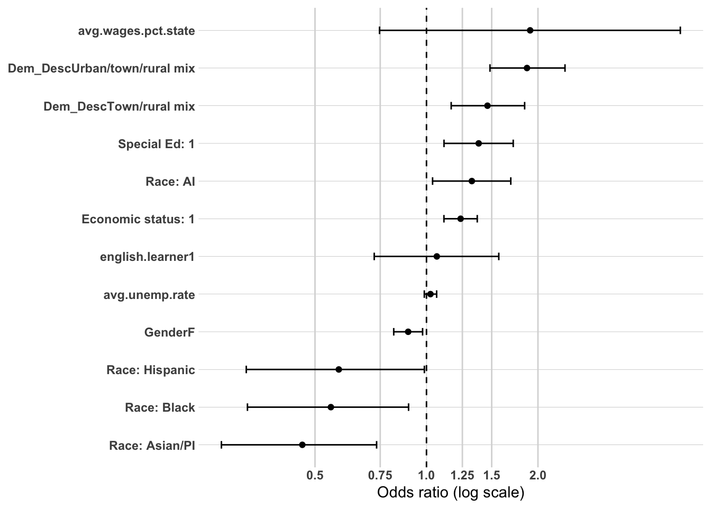
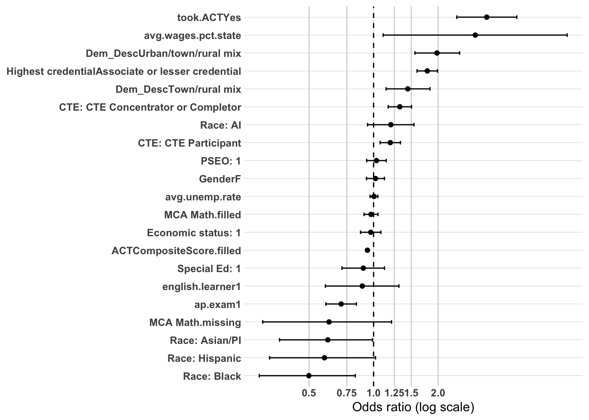
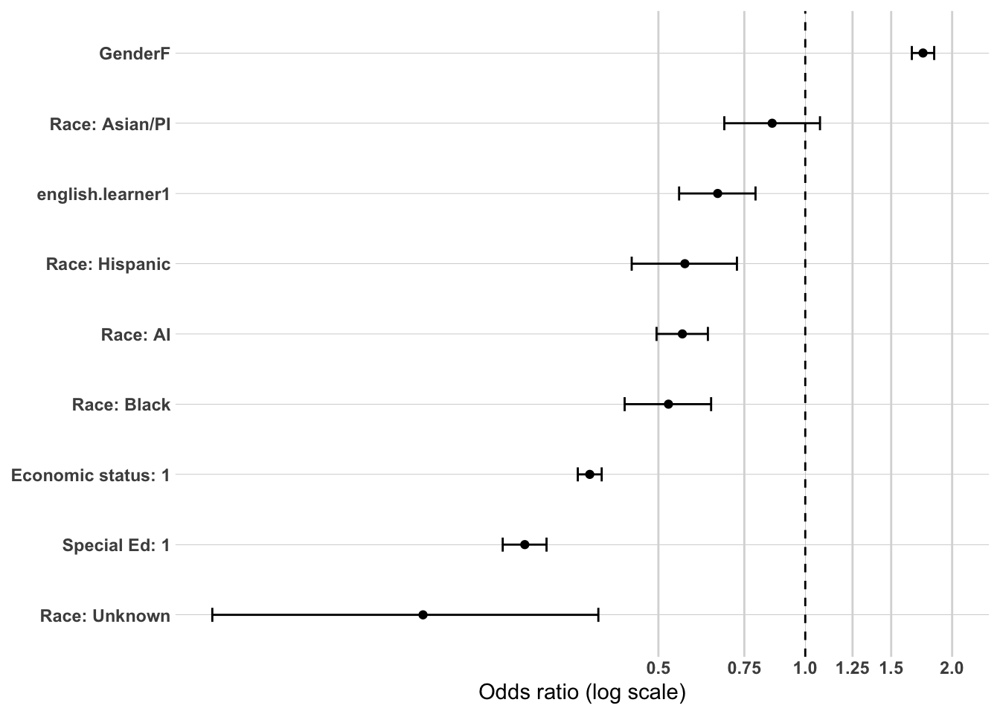
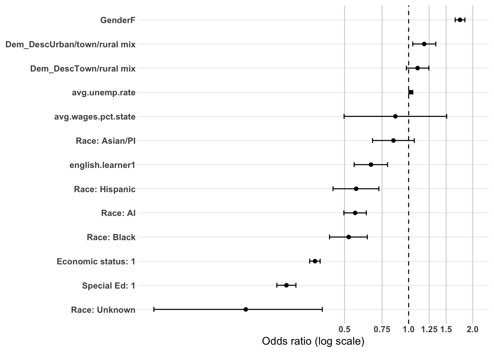
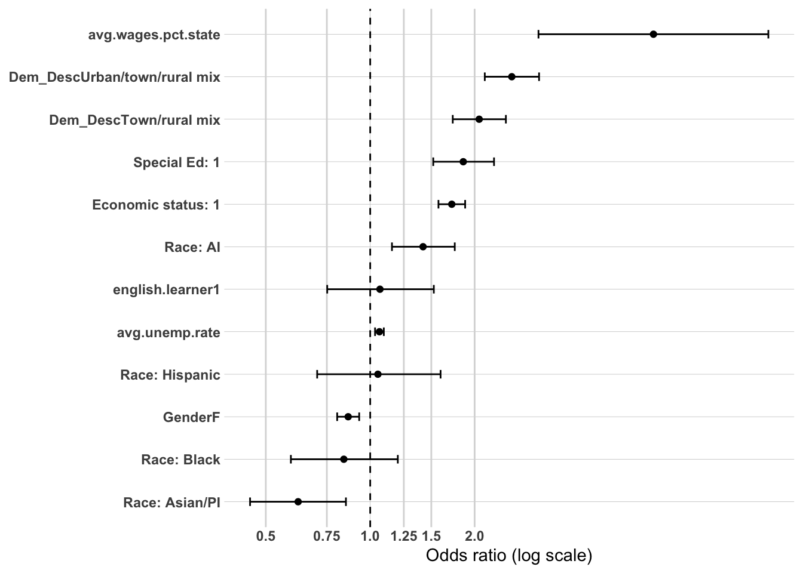
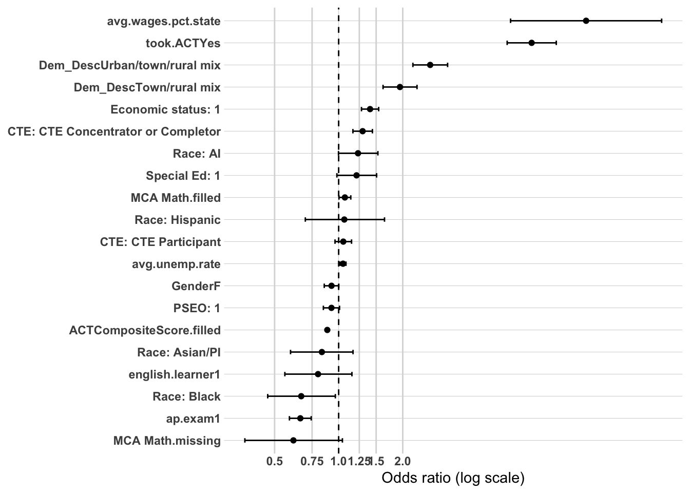
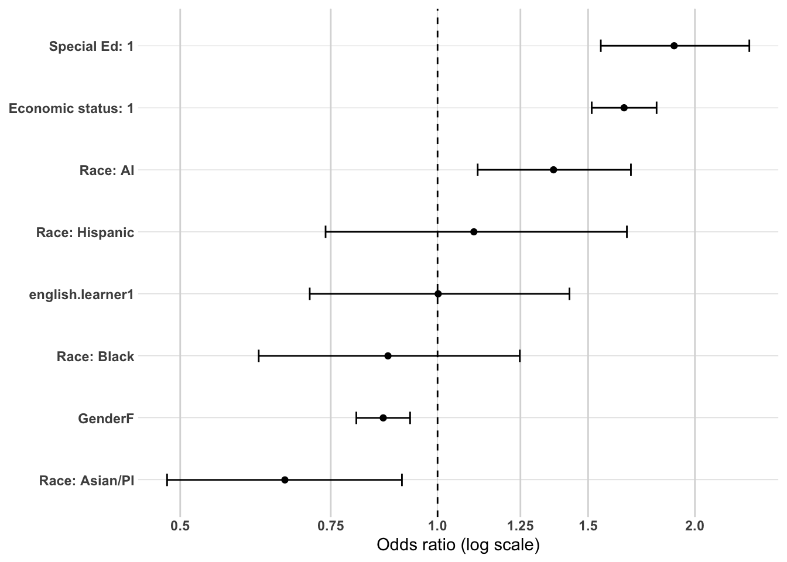
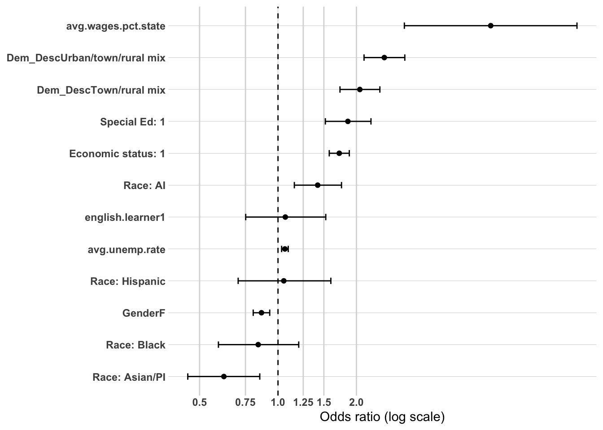
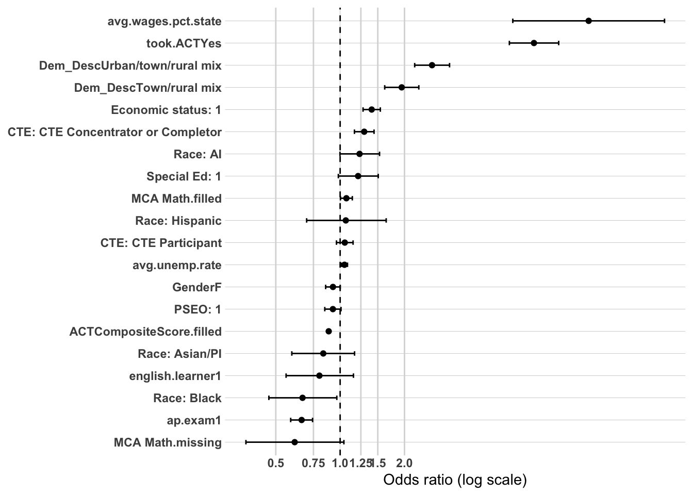

The purpose of this project is to explain which characteristics are associated with entry into distinct workforce participation pathways following high school graduation in Northeast Minnesota (EDR 3). These pathways include sustained employment in the region, sustained employment elsewhere in Minnesota, non-sustained employment, and having no Minnesota employment record.
The policy question of greatest interest is what factors are associated with sustained employment in the region. Earlier analysis relied on bivariate analyses (cross-tabulations, Cramér’s V, and ANOVA) to identify patterns of stratification across workforce participation outcomes. A consistent finding was that postsecondary experiences—particularly credential attainment and where education was completed—are strongly associated with long-term workforce attachment. Academic preparation, early college exposure (PSEO), career and technical education (CTE), and structural demographic factors also demonstrated meaningful relationships.
To strengthen confidence in these findings, a limited multivariate analysis is conducted using logistic regression. The purpose of this modeling is not to establish causality or build a predictive tool, but to examine whether the strongest bivariate relationships remain directionally consistent when key variables are considered simultaneously. This approach helps clarify whether preparation variables retain independent associations after accounting for credential attainment, and whether regional postsecondary completion remains influential when controlling for background and readiness.
Logistic regression is used here as a confirmatory tool rather than the primary analytic framework.
Methodology
Dependent Variables
This analysis models five distinct outcomes, each restricted to the appropriate subset of the cohort:
Sustained regional workforce attachment (grad.year.5) — binary (1 = meaningful employment within the region five years after high school graduation, 0 = otherwise), modeled across the full graduating cohort.
Sustained regional workforce attachment (grad.year.5, college completers only) - binary (1 = meaningful employment within the region five years after high school graduation, 0 = otherwise), modeled across college completers only.
Postsecondary completion (ps.grad) — binary (1 = completed a postsecondary credential, 0 = did not), modeled across all high school graduates, regardless of whether they ever attended postsecondary education.
Postsecondary completion within the region — binary (1 = completed a postsecondary credential within the region, 0 = completed elsewhere in Minnesota or out of state), restricted to postsecondary completers only.
Sub-baccalaureate credential attainment — binary (1 = highest credential earned is an associate degree or less-than-associate credential, 0 = bachelor’s degree or higher), restricted to postsecondary completers only.
Sample
All four models are restricted to the 2011–2019 graduating cohorts. Earlier cohorts (2008–2010) are excluded because PSEO participation was not consistently tracked in the data system prior to 2011 — missingness in that variable is concentrated almost entirely in those years rather than distributed randomly, and including them would risk misclassifying genuine PSEO participants as non-participants. And PSEO participation was identified as having a very strong relationship to our dependent variables in the bivariate analysis.
Independent Variables
Variables were selected based on (1) a demonstrated bivariate relationship with the relevant outcome(s) in the cross-tabulation and ANOVA analysis, and (2) practical usability in a multivariate model, with closely related variables consolidated to avoid multicollinearity. The same variable set and coding is used across all four outcomes.
Demographics
Gender
RaceEthnicity
economic.status
SpecialEdStatus
english.learner
High school characteristics
Dem_Desc (district rural/urban classification)
avg.wages.pct.state (local average wages as a percentage of the state average)
ps.grad - used only for the DV1a WF - Region as the dependent variable with full population
highest.cred.level - these will be tested on the dependent variables where college completers are the only individuals being analysed.
ps.grad.location - these will be tested on the dependent variables where college completers are the only individuals being analysed.
Notes on Variable Selection
Academic achievement (MCA). MCA Math, Reading, and Science scores are highly correlated with one another (r = 0.63–0.75) and with ACT performance. Including all three MCA subject scores in the same model produces unstable, difficult-to-interpret coefficients without adding meaningful explanatory power. MCA Math was retained as the single representative of academic proficiency; it has the lowest missingness of the three subjects and a comparable or stronger bivariate relationship with the outcomes examined.
CTE engagement.cte.achievement (concentrator/completer/participant/no CTE) was retained over total.cte.courses.taken, a continuous measure of the same underlying construct. The two are redundant, and the categorical version is more directly interpretable for a non-technical audience.
ACT participation and score. Students who did not take the ACT have no composite score by definition — this is a structural absence tied entirely to an observed variable (took.ACT), not missing data in the conventional sense. To retain the full sample rather than dropping non-test-takers, ACTCompositeScore was recoded to 0 for non-test-takers and entered into the model alongside took.ACT. With both terms present, took.ACT captures the effect of test participation itself, while ACTCompositeScore captures the achievement gradient specifically among test-takers, without the two effects being confounded.
Academic achievement missingness (MCA Math). MCA Math scores are missing at a substantially higher rate for English learner students (26.1%) than for other students (2.4%), a pattern that is not random and initially appeared to mask English learner status as a significant predictor via complete-case deletion. To address this, a missing-data indicator (MCA.M.missing) was created alongside a filled score (MCA.M.filled, coded 0 for missing cases), with both entered as separate terms in place of raw MCA.M. This preserves the full analytic sample and prevents this specific missingness pattern from being conflated with English learner status itself.
Variables dropped.range.school, total.cte.courses.taken, sat.taken, MCA.R, and MCA.S were excluded due to a combination of weak bivariate association, redundancy with a retained variable, or both.
Modeling Approach
Each outcome is modeled using a sequential block-entry approach, adding one group of predictors at a time to assess the relative contribution of each. Each block is compared to the prior one using a likelihood ratio test to confirm it adds significant explanatory power, with AIC and pseudo-R² tracked across the sequence to summarize overall model improvement.
Sustained regional workforce attachment:
Model 1: Demographics
Model 2: + High school characteristics
Model 3: + High school accomplishments
Model 4: + College completion
Sustained regional workforce attachment - college completers only
Model 1: Demographics
Model 2: + High school characteristics
Model 3: + High school accomplishments
Model 4: + highest credential earned
Model 5: + post-secondary location
Model 6: Dependent on results
Postsecondary completion, all high school graduates:
Model 1: Demographics
Model 2: + High school characteristics
Model 3: + High school accomplishments
Postsecondary completion within the region, completers only:
Following these base model sequences, additional modeling will be considered only if the results indicate a need for further specification (e.g., interaction effects, additional mediation checks).
Analysis Approach
This multivariate analysis is structured as a series of theoretically guided logistic regression models designed to evaluate mechanisms associated with sustained regional employment. The goal is confirmatory testing of previously observed patterns rather than prediction or causal inference.
Evaluation Criteria
Results will be reported using: - Odds ratios - 95% confidence intervals - Statistical significance levels - Directional interpretation
Model comparison metrics (AIC and pseudo R²) will be used to assess relative improvement across specifications within each outcome’s model sequence, but emphasis will remain on coefficient stability, attenuation patterns, and substantive interpretation rather than overall fit.
Interpretation Framework
Interpretation will focus on:
Direction and relative magnitude of associations
Changes in coefficients across blocks within each model sequence
Evidence of attenuation as additional blocks are introduced.
Findings will be described as associations holding other included variables constant. No causal claims will be made. Together, these models provide multivariate confirmation of patterns identified in earlier descriptive analyses while preserving conceptual clarity and interpretability.
Prep DV1a data
The first thing I need to do is setup my dataset for modeling. I’m going to create the workforce participation into a binary and will use grad.year.5 as my modeling year.
model_vars_final <-c("Gender", "RaceEthnicity", "economic.status", "SpecialEdStatus","english.learner", "Dem_Desc", "avg.wages.pct.state", "avg.unemp.rate","pseo.participant", "took.ACT", "ACTCompositeScore", "ap.exam","cte.achievement", "MCA.M", "ps.grad","grad.year.5")master.model <- master %>%filter(grad.year >2010) %>%select(PersonID, all_of(model_vars_final)) %>%filter(grad.year.5!="After 2023", grad.year.5!="Attending ps", ps.grad !="Attending ps",!is.na(pseo.participant)) %>%mutate(grad.year.5 =ifelse(grad.year.5=="Sustained WF - NE", 1, 0),Gender =fct_relevel(Gender, "M"),RaceEthnicity =fct_relevel(RaceEthnicity, "White"),economic.status =as_factor(economic.status),economic.status =fct_relevel(economic.status, "0"),SpecialEdStatus =as.character(SpecialEdStatus),SpecialEdStatus =fct_relevel(SpecialEdStatus, "0"),english.learner =as_factor(english.learner),english.learner =fct_relevel(english.learner, "0"),Dem_Desc =fct_relevel(Dem_Desc, "Entirely rural"),pseo.participant =as.character(pseo.participant),pseo.participant =fct_relevel(pseo.participant, "0"),took.ACT =fct_relevel(took.ACT, "No"),ACTCompositeScore.filled =ifelse(is.na(ACTCompositeScore), 0, ACTCompositeScore),MCA.M.missing =ifelse(is.na(MCA.M), 1, 0),MCA.M.filled =ifelse(is.na(MCA.M), 0, MCA.M),ap.exam =as_factor(ap.exam),ap.exam =fct_relevel(ap.exam, "0"),cte.achievement =fct_relevel(cte.achievement, "No CTE"),ps.grad =ifelse(ps.grad =="Y", "Yes", ps.grad),ps.grad =fct_relevel(ps.grad, "No")) nrow(master.model) # should now be back up near 20,386, since MCA.M no longer forces complete-case loss
White AI Asian/PI Black Hispanic
17902 1295 271 477 253
We now have 20,198 individuals to model with 18 variables not including grad.year.5.
Modeling: Sustained WF - Region (full population)
Model 1: Demographics
This model estimates the association between demographic characteristics and sustained regional workforce attachment five years after high school graduation, using the full analytic sample (n = 20,198). The outcome is coded 1 = sustained workforce attachment within the region (“Sustained WF - NE”), 0 = all other outcomes (non-sustained, sustained elsewhere in Minnesota, or no Minnesota employment record).
Demographic factors show a consistent pattern: every group examined is less likely than its reference category to achieve sustained regional attachment.
Race and ethnicity shows the widest range of effects in this model.
Black graduates: approximately 53% lower odds of sustained regional attachment relative to White graduates (OR ≈ 0.47).
Asian/Pacific Islander graduates: approximately 43% lower odds (OR ≈ 0.57).
Hispanic graduates: approximately 39% lower odds (OR ≈ 0.61).
American Indian graduates: approximately 15% lower odds (OR ≈ 0.85), the smallest gap among the four groups but still statistically significant.
Other demographic predictors show smaller but still significant effects.
English learner status: approximately 21% lower odds of sustained regional attachment (OR ≈ 0.79).
Special education status: approximately 15% lower odds (OR ≈ 0.85).
Female graduates: approximately 12% lower odds relative to male graduates (OR ≈ 0.88).
Economic disadvantage: approximately 7% lower odds (OR ≈ 0.93) — the weakest effect in the model, significant at p < .05 but only just.
Overall Interpretation
At the demographics-only stage, every predictor points in the same direction: relative to the reference group (male, White, not economically disadvantaged, not special education, not an English learner), each demographic category examined shows lower odds of sustained regional workforce attachment. Race and ethnicity produce the largest disparities, with Black and Asian/Pacific Islander graduates showing the steepest gaps. Economic status has the smallest effect of the five predictors, sitting just inside statistical significance. These patterns are essentially identical to the initial exploratory version of this model (n = 20,386, prior to the PSEO-missingness exclusion), confirming that excluding those 188 records did not materially change the demographic baseline.
This is a baseline model only — it does not yet account for high school context, academic preparation, or postsecondary completion, all of which are added in subsequent blocks.
Model fit: AIC = 25,094.7; residual deviance = 25,077 on 20,189 df (null deviance = 25,227 on 20,197 df).
or_plot <-tidy(model1_dv1, conf.int =TRUE, exponentiate =TRUE) %>%filter(term !="(Intercept)") %>%mutate(# Make labels nicer (edit these replacements to match your exact factor labels)term =str_replace_all(term, c("RaceEthnicity"="Race: ","economic.status"="Economic status: ","SpecialEdStatus"="Special Ed: ","pseo.participant"="PSEO: ","cte.achievement"="CTE: ","MCA.M"="MCA Math" )),# Put most important effects near the top (optional: tweak ordering later)term =fct_reorder(term, estimate) )ggplot(or_plot, aes(x = estimate, y = term)) +geom_vline(xintercept =1, linetype ="dashed") +geom_vline(xintercept =c(0.5, 0.75, 1.25, 1.5, 2),color ="grey85") +geom_point() +geom_errorbar(aes(xmin = conf.low, xmax = conf.high),orientation ="y",width =0.2 ) +scale_x_log10(breaks =c(0.5, 0.75, 1, 1.25, 1.5, 2),labels =c("0.5", "0.75", "1.0", "1.25", "1.5", "2.0") ) + theme_line +labs(x ="Odds ratio (log scale)",y =NULL )
Model 2: Demographics + High School Characteristics
This model adds high school characteristics — district rural/urban classification, local wage levels, and local unemployment rates — to the demographic baseline established in Model 1. The analytic sample remains n = 20,198.
District classification (Dem_Desc) is again the strongest new predictor in this block, showing the same clear, increasing gradient found in the earlier exploratory work.
Town/rural mix districts: approximately 30% higher odds of sustained regional attachment relative to entirely rural districts (OR ≈ 1.30).
Urban/town/rural mix districts: approximately 61% higher odds relative to entirely rural districts (OR ≈ 1.61).
Local economic conditions again show no independent effect at this stage.
Average local wages (% of state average) is not statistically significant (OR ≈ 1.43, CI: 0.76–2.67, crosses 1).
Average local unemployment rate is not statistically significant (OR ≈ 1.01, CI: 0.983–1.034, crosses 1).
Consistent with the earlier exploratory model, both are retained but not built into the narrative interpretation, since neither holds up as an independent predictor once entered alongside demographics and district type.
Demographic effects from Model 1 persist, with one variable now at the edge of significance.
Gender, Race/Ethnicity (all four categories), Special Education status, and English learner status remain statistically significant, in the same direction and similar magnitude to Model 1.
Economic status is no longer statistically significant (OR ≈ 0.951, CI: 0.892–1.014, crosses 1) — the same attenuation pattern observed in the earlier exploratory work, suggesting some of the economic-status effect on regional attachment may be explained by geographic/community context rather than economic status operating independently. Whether this persists or reverses will be tracked through Models 3 and 4.
Overall Interpretation
Adding high school characteristics significantly improves model fit (likelihood ratio test: Δdeviance = 81.89, df = 4, p < .001; AIC decreases from 25,094.7 to 25,020.8). As in the earlier exploratory analysis, district rural/urban classification is the one high-school-characteristic variable that shows a clear, significant, and interpretable relationship with sustained regional attachment, while local wage and unemployment levels do not hold up independently. The attenuation of the economic-status effect continues to be the most substantively interesting development in this block.
Model fit: AIC = 25,020.8 (down from 25,094.7 in Model 1); Δdeviance = 81.89 on 4 df, p < .001; n = 20,198 in both models.
or_plot <-tidy(model2_dv1, conf.int =TRUE, exponentiate =TRUE) %>%filter(term !="(Intercept)") %>%mutate(# Make labels nicer (edit these replacements to match your exact factor labels)term =str_replace_all(term, c("RaceEthnicity"="Race: ","economic.status"="Economic status: ","SpecialEdStatus"="Special Ed: ","pseo.participant"="PSEO: ","cte.achievement"="CTE: ","MCA.M"="MCA Math","highest.cred.level"="Highest credential" )),# Put most important effects near the top (optional: tweak ordering later)term =fct_reorder(term, estimate) )ggplot(or_plot, aes(x = estimate, y = term)) +geom_vline(xintercept =1, linetype ="dashed") +geom_vline(xintercept =c(0.5, 0.75, 1.25, 1.5, 2),color ="grey85") +geom_point() +geom_errorbar(aes(xmin = conf.low, xmax = conf.high),orientation ="y",width =0.2 ) +scale_x_log10(breaks =c(0.5, 0.75, 1, 1.25, 1.5, 2),labels =c("0.5", "0.75", "1.0", "1.25", "1.5", "2.0") ) + theme_line +labs(x ="Odds ratio (log scale)",y =NULL )
Model 3: Demographics + High School Characteristics + High School Accomplishments
This model adds high school accomplishments — PSEO participation, ACT participation and score, AP exam participation, CTE achievement, and MCA Math (with the missing-data adjustment) — to the growing specification. The analytic sample remains n = 20,198.
CTE achievement continues to anchor students regionally.
CTE Concentrators/Completers: approximately 37% higher odds of sustained regional attachment relative to no CTE involvement (OR ≈ 1.37).
CTE Participants: approximately 18% higher odds (OR ≈ 1.18).
AP exam participation is associated with lower odds of regional attachment (OR ≈ 0.68), consistent with the pattern that college-preparatory engagement pulls graduates away from the region.
PSEO participation is not statistically significant in this specification (OR ≈ 1.01, CI: 0.939–1.078, crosses 1). As in the earlier exploratory work, PSEO’s apparent bivariate influence does not hold up as an independent effect once ACT participation, ACT score, AP exam, and CTE are considered together.
ACT shows the same crossover pattern found in the earlier exploratory model, and again requires a joint reading rather than a single headline coefficient.
Took the ACT (vs. did not): OR ≈ 3.86 — a large, positive association with sustained regional attachment.
ACT composite score (among test-takers): OR ≈ 0.93 per point — each additional point is associated with lower odds of regional attachment.
Together, these describe a crossover: relative to non-test-takers, students who took the ACT and scored below approximately the high-teens/low-20s show higher odds of regional attachment, while higher-scoring test-takers show lower odds. Simply engaging with the ACT is not itself a signal of leaving the region — it is specifically high-scoring ACT engagement that predicts departure.
MCA Math again shows the missing-data flag doing the substantive work, not the score itself. The filled score is not significant (OR ≈ 1.02, CI: 0.978–1.068, crosses 1), while the missing-data indicator is strongly significant and substantively large (OR ≈ 0.190): students with a missing MCA Math score show dramatically lower odds of sustained regional attachment than students with an observed score.
English learner status remains non-significant in this model (OR ≈ 0.914, CI: 0.771–1.081), consistent with the earlier finding that a substantial share of the apparent English-learner effect in Models 1–2 is better explained by whatever circumstances are associated with a missing MCA score, rather than English learner status independently.
Several other coefficients shift from Model 2, in the same directions found previously:
Economic status returns to significance, more strongly than in Model 1 (OR ≈ 0.846, CI: 0.791–0.905).
Average local wages becomes significant for the first time (OR ≈ 2.40, CI: 1.259–4.579), having shown no independent effect in Model 2.
Gender is no longer significant (OR ≈ 0.947, CI: 0.889–1.008, crosses 1), a change from Models 1 and 2.
Special Education status strengthens (OR ≈ 0.763, compared to OR ≈ 0.851 in Model 2).
Race/Ethnicity effects persist across all four categories, stable in direction and magnitude relative to prior models.
District classification (Dem_Desc) remains significant and essentially unchanged from Model 2.
Overall Interpretation
Adding high school accomplishments substantially improves model fit (likelihood ratio test: Δdeviance = 676.34, df = 8, p < .001; AIC decreases from 25,020.8 to 24,360.5) — the largest improvement of any block so far, and consistent in scale with the earlier exploratory version of this model. Academic and college-preparatory engagement (ACT, AP) continues to point away from regional attachment, while CTE engagement continues to anchor students to the region — replicating the “dual pathways” pattern found throughout this project’s descriptive work. As before, the attenuation of the English learner effect alongside the strong MCA-missingness flag suggests the apparent English-learner disparity in earlier models is at least partly explained by whatever circumstances are associated with missing academic records for that population, rather than English learner status alone.
Model fit: AIC = 24,360.5 (down from 25,020.8 in Model 2); Δdeviance = 676.34 on 8 df, p < .001; n = 20,198 across all three models.
or_plot <-tidy(model3_dv1, conf.int =TRUE, exponentiate =TRUE) %>%filter(term !="(Intercept)") %>%mutate(# Make labels nicer (edit these replacements to match your exact factor labels)term =str_replace_all(term, c("RaceEthnicity"="Race: ","economic.status"="Economic status: ","SpecialEdStatus"="Special Ed: ","pseo.participant"="PSEO: ","cte.achievement"="CTE: ","MCA.M"="MCA Math","highest.cred.level"="Highest credential" )),# Put most important effects near the top (optional: tweak ordering later)term =fct_reorder(term, estimate) )ggplot(or_plot, aes(x = estimate, y = term)) +geom_vline(xintercept =1, linetype ="dashed") +geom_vline(xintercept =c(0.5, 0.75, 1.25, 1.5, 2),color ="grey85") +geom_point() +geom_errorbar(aes(xmin = conf.low, xmax = conf.high),orientation ="y",width =0.2 ) +scale_x_log10(breaks =c(0.5, 0.75, 1, 1.25, 1.5, 2),labels =c("0.5", "0.75", "1.0", "1.25", "1.5", "2.0") ) + theme_line +labs(x ="Odds ratio (log scale)",y =NULL )
Model 4: Demographics + High School Characteristics + High School Accomplishments + Postsecondary Completion
This model adds postsecondary completion (ps.grad: completed a postsecondary credential, yes/no) to the full specification. The analytic sample remains n = 20,198.
Postsecondary completion is strongly and cleanly associated with sustained regional workforce attachment.
Completed a postsecondary credential: approximately 67% higher odds of sustained regional attachment relative to non-completers (OR ≈ 1.67, CI: 1.561–1.791).
Unlike the collinearity problems encountered when highest.cred.level and ps.grad.location were both entered into this full-cohort model, ps.grad produces a single, precisely estimated, unambiguous effect — completing any postsecondary credential meaningfully raises the odds of sustained regional attachment, independent of demographics, high school context, and academic preparation.
Several accomplishments-block coefficients strengthen once postsecondary completion is added, rather than attenuating:
Took the ACT: OR increases from 3.86 (Model 3) to 4.20 — larger, not smaller, once completion is controlled for.
ACT composite score: OR moves from 0.932 to 0.924 — the negative gradient among test-takers strengthens slightly.
Special Education status strengthens further (OR ≈ 0.804, compared to OR ≈ 0.763 in Model 3).
Economic status strengthens further (OR ≈ 0.910, compared to OR ≈ 0.846 in Model 3).
This pattern — effects strengthening rather than attenuating once completion is added — suggests these variables’ associations with regional attachment are not simply proxies for “did they finish college,” but operate at least partly through separate pathways (e.g., CTE/technical engagement, ACT engagement) independent of completion itself.
PSEO participation remains non-significant (OR ≈ 0.960, CI: 0.895–1.029), continuing the pattern from Model 3.
Most other predictors remain stable:
Gender, all four Race/Ethnicity categories, Dem_Desc, average local wages, AP exam, CTE achievement, and the MCA-missingness flag all remain significant, similar in direction and magnitude to Model 3.
Average local unemployment rate remains non-significant.
English learner status remains non-significant (OR ≈ 0.900, CI: 0.759–1.065), consistent with the interpretation that the MCA-missingness flag — not English learner status itself — is carrying the relevant signal.
Overall Interpretation
Adding postsecondary completion significantly improves model fit (likelihood ratio test: Δdeviance = 218.01, df = 1, p < .001; AIC decreases from 24,360.5 to 24,144.5). Completing a postsecondary credential of any kind is a strong, independent, and cleanly estimated predictor of sustained regional workforce attachment — confirming, at the simplest level, that postsecondary completion itself matters for regional workforce outcomes. This model deliberately does not distinguish credential type or completion location; that finer-grained question — which mattered most in the earlier exploratory work, and which the original combined model could not answer cleanly due to collinearity — is addressed separately in DV1b, restricted to postsecondary completers, where credential level and graduation location can be evaluated without competing against a “did they complete at all” question that this model already answers.
Model fit: AIC = 24,144.5 (down from 24,360.5 in Model 3); Δdeviance = 218.01 on 1 df, p < .001; n = 20,198 across all four models.
or_plot <-tidy(model4_dv1, conf.int =TRUE, exponentiate =TRUE) %>%filter(term !="(Intercept)") %>%mutate(# Make labels nicer (edit these replacements to match your exact factor labels)term =str_replace_all(term, c("RaceEthnicity"="Race: ","economic.status"="Economic status: ","SpecialEdStatus"="Special Ed: ","pseo.participant"="PSEO: ","cte.achievement"="CTE: ","MCA.M"="MCA Math","highest.cred.level"="Highest credential" )),# Put most important effects near the top (optional: tweak ordering later)term =fct_reorder(term, estimate) )ggplot(or_plot, aes(x = estimate, y = term)) +geom_vline(xintercept =1, linetype ="dashed") +geom_vline(xintercept =c(0.5, 0.75, 1.25, 1.5, 2),color ="grey85") +geom_point() +geom_errorbar(aes(xmin = conf.low, xmax = conf.high),orientation ="y",width =0.2 ) +scale_x_log10(breaks =c(0.5, 0.75, 1, 1.25, 1.5, 2),labels =c("0.5", "0.75", "1.0", "1.25", "1.5", "2.0") ) + theme_line +labs(x ="Odds ratio (log scale)",y =NULL )
DV1a Summary: What Predicts Sustained Regional Workforce Attachment (Full Cohort)
Across all four model blocks, a consistent story emerged:
Demographics matter, but not in isolation. Race/ethnicity produced the largest disparities of any demographic factor (Black and Asian/Pacific Islander graduates showing the steepest gaps), and these held up across every model. Economic status, by contrast, was unstable — significant, then not, then significant again — as high school context and academic variables entered, suggesting its apparent effect is partly explained by where students grow up and what they engage with in school, not economic status acting alone.
Geography matters from the start. District type (rural vs. urban) showed a clean, consistent, increasing gradient in every model: more urban districts predicted higher odds of regional attachment, and this never washed out as other blocks were added.
Two distinct, opposing pathways emerged in high school accomplishments. CTE engagement consistently predicted staying regional. ACT and AP engagement told a more complex story: simply taking the ACT predicted staying, but scoring well on it predicted leaving — a crossover suggesting it’s specifically high academic achievement, not college-prep engagement itself, that pulls graduates away from the region. PSEO never showed an independent effect once these other variables were in the model.
Postsecondary completion is a strong, standalone predictor. Completing any credential raised the odds of regional attachment by about 67%, and unlike the credential-type/location breakdown, this variable produced a clean estimate with no collinearity problems.
One important data-quality finding shaped every model: English learner status looked like a significant predictor early on, but that effect was substantially explained by an unrelated pattern — English learners are far more likely to have a missing MCA Math score, and it’s the missingness itself, not English learner status, that carries the real signal. That distinction matters for how any disparity findings involving English learners should be framed going forward.
The one open question this model deliberately left aside:what kind of credential and where it was earned. That’s DV1b’s job — the same postsecondary-completion population, but able to actually separate credential depth from completion location without the collinearity problem that broke the original combined model.
Prep DV1b data
The first thing I need to do is setup my dataset for modeling. I’m going to create the workforce participation into a binary and will use grad.year.5 as my modeling year.
We now have 20,198 individuals to model with 18 variables not including grad.year.5.
Modeling: Sustained WF - Region (college completers only)
Model 1: Demographics
This model estimates the association between demographic characteristics and sustained regional workforce attachment five years after high school graduation, restricted to postsecondary completers (n = 8,500). The outcome is coded 1 = sustained workforce attachment within the region (“Sustained WF - NE”), 0 = all other outcomes.
This model tells a meaningfully different story than DV1a’s demographics-only model, not just a smaller-sample version of the same one. Several effects reverse direction entirely once the population is restricted to college completers.
Economic status: OR ≈ 1.21 (CI: 1.091–1.340) — economically disadvantaged completers show higher odds of sustained regional attachment. This is the opposite direction from DV1a, where economic disadvantage predicted lower odds across the full cohort.
Special Education status: OR ≈ 1.40 (CI: 1.133–1.740) — also reversed from DV1a, where Special Ed status predicted lower odds.
American Indian graduates: OR ≈ 1.28 (CI: 1.003–1.624) — reversed from a negative effect in DV1a to a positive, borderline-significant effect here (p = .046).
English learner status: no longer significant (OR ≈ 1.05, CI: 0.714–1.542, p = .80) — a large shift from DV1a, where this was one of the more robust demographic predictors.
Some effects persist in the same direction as DV1a, though attenuated:
Gender: OR ≈ 0.89 (CI: 0.815–0.975) — female completers show modestly lower odds, consistent with DV1a.
Black graduates: OR ≈ 0.56 (CI: 0.336–0.911) — still lower odds than White graduates, consistent in direction with DV1a.
Asian/Pacific Islander graduates: OR ≈ 0.48 (CI: 0.288–0.754) — still the largest disparity among Race/Ethnicity categories, consistent with DV1a.
Hispanic graduates: OR ≈ 0.61, but no longer statistically significant (CI: 0.341–1.029, p = .073) — likely reflecting reduced statistical power in this smaller population (n = 65 Hispanic completers), not necessarily a disappearing effect.
Overall Interpretation
Among students who complete a postsecondary credential, the demographic predictors of sustained regional workforce attachment look substantially different than they do across the full graduating cohort. Economic disadvantage and Special Education status, both associated with lower regional attachment in the full-cohort model, are associated with higher attachment once the population is restricted to completers — suggesting that among students who make it through college, these groups may be more likely to return to or remain in the region, possibly reflecting stronger local ties, more localized program/institution choices, or different postsecondary pathways than their more economically advantaged or non-Special-Ed peers. Race/Ethnicity effects, particularly for Asian/Pacific Islander and Black graduates, remain directionally consistent with the full-cohort findings, suggesting those disparities are not solely a function of who completes college but persist even after completion. English learner status, notably, shows no effect at all in this population — a genuine shift from its significance in every DV1a model, worth naming explicitly rather than attributing to sample size alone, since the coefficient itself moved toward the null, not just its precision.
Given the smaller sample size (n = 8,500 vs. 20,198), and especially the very small Hispanic subgroup (n = 65) in this population, some of these shifts should be interpreted cautiously — reduced power alone could account for lost significance in a few cases, but the reversals in direction for economic status, Special Ed, and American Indian graduates are unlikely to be explained by power alone and appear to reflect a genuinely different pattern among completers specifically.
Model fit: AIC = 11,147.3; residual deviance = 11,129 on 8,491 df (null deviance = 11,187 on 8,499 df).
or_plot <-tidy(model1_dv1b, conf.int =TRUE, exponentiate =TRUE) %>%filter(term !="(Intercept)") %>%mutate(# Make labels nicer (edit these replacements to match your exact factor labels)term =str_replace_all(term, c("RaceEthnicity"="Race: ","economic.status"="Economic status: ","SpecialEdStatus"="Special Ed: ","pseo.participant"="PSEO: ","cte.achievement"="CTE: ","MCA.M"="MCA Math" )),# Put most important effects near the top (optional: tweak ordering later)term =fct_reorder(term, estimate) )ggplot(or_plot, aes(x = estimate, y = term)) +geom_vline(xintercept =1, linetype ="dashed") +geom_vline(xintercept =c(0.5, 0.75, 1.25, 1.5, 2),color ="grey85") +geom_point() +geom_errorbar(aes(xmin = conf.low, xmax = conf.high),orientation ="y",width =0.2 ) +scale_x_log10(breaks =c(0.5, 0.75, 1, 1.25, 1.5, 2),labels =c("0.5", "0.75", "1.0", "1.25", "1.5", "2.0") ) + theme_line +labs(x ="Odds ratio (log scale)",y =NULL )
Model 2: Demographics + High School Characteristics
This model adds high school characteristics — district rural/urban classification, local wage levels, and local unemployment rates — to the demographic baseline. The analytic sample remains n = 8,500.
District classification (Dem_Desc) again shows the strongest and clearest gradient among the new variables, and the effect is larger here than in DV1a.
Town/rural mix districts: approximately 46% higher odds of sustained regional attachment relative to entirely rural districts (OR ≈ 1.46).
Urban/town/rural mix districts: approximately 87% higher odds relative to entirely rural districts (OR ≈ 1.87).
Both effects are somewhat larger in magnitude than the corresponding DV1a coefficients (1.30 and 1.61), suggesting district context matters even more strongly for regional attachment among students who complete college than it does across the full cohort.
Local economic conditions again fail to show an independent effect, consistent with every other model in this project.
Average local wages: not statistically significant (OR ≈ 1.91, CI: 0.747–4.847, crosses 1).
Average local unemployment rate: not statistically significant (OR ≈ 1.03, CI: 0.987–1.065, crosses 1).
Demographic effects from Model 1 persist essentially unchanged, including the reversed-direction findings noted previously:
Economic status, Special Education status, and American Indian graduates all remain significant with the same positive direction found in Model 1 — economically disadvantaged, Special Ed, and American Indian completers continue to show higher odds of regional attachment than their counterparts.
Gender, Asian/Pacific Islander, Black, and Hispanic graduates remain significant (or near-significant, for Hispanic) in the same negative direction as Model 1.
English learner status remains non-significant, consistent with Model 1.
Overall Interpretation
Adding high school characteristics significantly improves model fit (likelihood ratio test: Δdeviance = 55.90, df = 4, p < .001; AIC decreases from 11,147.3 to 11,099.4). As in every other model in this project, district rural/urban classification is the one high-school-characteristic variable with a clear, robust, independent relationship to regional attachment — and its effect is notably stronger in this completers-only population than across the full cohort. Local wage and unemployment measures continue to show no independent effect once other variables are accounted for. The demographic reversals identified in Model 1 (economic status, Special Ed, American Indian) persist unchanged, reinforcing that these are not artifacts of the demographics-only specification.
Model fit: AIC = 11,099.4 (down from 11,147.3 in Model 1); Δdeviance = 55.90 on 4 df, p < .001; n = 8,500 in both models.
or_plot <-tidy(model2_dv1b, conf.int =TRUE, exponentiate =TRUE) %>%filter(term !="(Intercept)") %>%mutate(# Make labels nicer (edit these replacements to match your exact factor labels)term =str_replace_all(term, c("RaceEthnicity"="Race: ","economic.status"="Economic status: ","SpecialEdStatus"="Special Ed: ","pseo.participant"="PSEO: ","cte.achievement"="CTE: ","MCA.M"="MCA Math","highest.cred.level"="Highest credential" )),# Put most important effects near the top (optional: tweak ordering later)term =fct_reorder(term, estimate) )ggplot(or_plot, aes(x = estimate, y = term)) +geom_vline(xintercept =1, linetype ="dashed") +geom_vline(xintercept =c(0.5, 0.75, 1.25, 1.5, 2),color ="grey85") +geom_point() +geom_errorbar(aes(xmin = conf.low, xmax = conf.high),orientation ="y",width =0.2 ) +scale_x_log10(breaks =c(0.5, 0.75, 1, 1.25, 1.5, 2),labels =c("0.5", "0.75", "1.0", "1.25", "1.5", "2.0") ) + theme_line +labs(x ="Odds ratio (log scale)",y =NULL )

Model 3: Demographics + High School Characteristics + High School Accomplishments
This model adds high school accomplishments — PSEO participation, ACT participation and score, AP exam participation, CTE achievement, and MCA Math (with the missing-data adjustment) — to the specification. The analytic sample remains n = 8,500.
CTE achievement continues to anchor students regionally, with a larger effect than in DV1a.
CTE Concentrators/Completers: approximately 40% higher odds of sustained regional attachment relative to no CTE involvement (OR ≈ 1.40).
CTE Participants: approximately 22% higher odds (OR ≈ 1.22).
AP exam participation is again associated with lower odds of regional attachment (OR ≈ 0.70), consistent with DV1a.
ACT shows the same crossover pattern found throughout this project.
Took the ACT: OR ≈ 4.34 — the largest “took ACT” effect seen in any model so far.
ACT composite score (among test-takers): OR ≈ 0.92 per point — a stronger negative gradient than in DV1a (0.92–0.93 range there too, essentially consistent).
Several previously significant demographic effects lose significance once accomplishments are added — this is the most important development in this block.
Economic status is no longer significant (OR ≈ 1.04, CI: 0.931–1.155, crosses 1) — the positive effect found in Models 1–2 among completers washes out once academic/college-prep engagement is accounted for.
Special Education status is no longer significant (OR ≈ 0.95, CI: 0.758–1.193, crosses 1) — same pattern; the Model 1–2 reversal does not hold once accomplishments enter.
American Indian graduates are no longer significant (OR ≈ 1.22, CI: 0.954–1.564, crosses 1), though the direction remains positive.
This is a meaningful pattern: the demographic reversals that looked so striking in Models 1–2 (economic disadvantage and Special Ed predicting higher regional attachment among completers) appear to be substantially explained by how these students engage with high school accomplishments — particularly CTE and ACT patterns — rather than being independent effects of economic or Special Ed status themselves.
The MCA-missingness flag, strongly significant throughout DV1a, is not significant here. OR ≈ 0.54 (CI: 0.268–1.055) — a large point estimate but a wide interval that crosses 1. Given the much smaller sample in this completers-only population, this is most likely a power issue rather than evidence the underlying pattern disappears among completers — but it’s worth naming rather than glossing over, since it’s a genuine departure from every DV1a model.
Race/Ethnicity for Black, Asian/Pacific Islander, and Hispanic graduates remain significant (Hispanic just barely, p ≈ .049 based on the CI boundary) and in the same negative direction as Models 1–2.
District classification (Dem_Desc) and average local wages remain significant, similar in magnitude to Model 2. Average unemployment rate remains non-significant. English learner status and PSEO participation remain non-significant, consistent with prior models.
Overall Interpretation
Adding high school accomplishments significantly improves model fit (likelihood ratio test: Δdeviance = 442.73, df = 8, p < .001; AIC decreases from 11,099.4 to 10,672.7) — again the largest improvement of any block. The central finding here is that the demographic reversals unique to this completers-only population (economic status, Special Ed, American Indian) do not survive once high school accomplishments are accounted for — suggesting these groups’ apparent regional-attachment advantage among completers operates through their patterns of CTE, ACT, and other accomplishment engagement, not through economic or Special Ed status directly. Academic achievement (ACT score) and college-preparatory engagement continue to show the same “engagement helps, high achievement pulls away” crossover pattern found throughout this project, and CTE continues to show the strongest, most consistent regional-anchoring effect of any single predictor examined so far.
Model fit: AIC = 10,672.7 (down from 11,099.4 in Model 2); Δdeviance = 442.73 on 8 df, p < .001; n = 8,500 across all three models.
or_plot <-tidy(model3_dv1b, conf.int =TRUE, exponentiate =TRUE) %>%filter(term !="(Intercept)") %>%mutate(# Make labels nicer (edit these replacements to match your exact factor labels)term =str_replace_all(term, c("RaceEthnicity"="Race: ","economic.status"="Economic status: ","SpecialEdStatus"="Special Ed: ","pseo.participant"="PSEO: ","cte.achievement"="CTE: ","MCA.M"="MCA Math","highest.cred.level"="Highest credential" )),# Put most important effects near the top (optional: tweak ordering later)term =fct_reorder(term, estimate) )ggplot(or_plot, aes(x = estimate, y = term)) +geom_vline(xintercept =1, linetype ="dashed") +geom_vline(xintercept =c(0.5, 0.75, 1.25, 1.5, 2),color ="grey85") +geom_point() +geom_errorbar(aes(xmin = conf.low, xmax = conf.high),orientation ="y",width =0.2 ) +scale_x_log10(breaks =c(0.5, 0.75, 1, 1.25, 1.5, 2),labels =c("0.5", "0.75", "1.0", "1.25", "1.5", "2.0") ) + theme_line +labs(x ="Odds ratio (log scale)",y =NULL )
Model 4: Demographics + High School Characteristics + High School Accomplishments + Highest Credential Earned
This model adds highest credential level attained (Associate degree or less, relative to Bachelor’s degree or higher) to the specification. The analytic sample remains n = 8,500.
Credential level shows a large, cleanly estimated, and precisely significant effect — the strongest single addition to this model sequence so far.
Associate degree or less credential: approximately 78% higher odds of sustained regional attachment relative to a Bachelor’s degree or higher (OR ≈ 1.78, CI: 1.595–1.987).
Unlike DV1a’s earlier exploratory attempt to include both credential level and graduation location in a full-cohort model — where collinearity between the two variables produced wide, unstable confidence intervals — this coefficient is precise and unambiguous. In a population restricted to completers only, credential level behaves as a well-defined, independently interpretable predictor: shorter, typically more technical credentials are associated with substantially higher odds of remaining regionally employed than four-year degrees.
Several accomplishments-block coefficients shift once credential level is added, suggesting some of their effect operates through eventual credential choice:
Took the ACT: OR drops from 4.34 (Model 3) to 3.37 — still large and highly significant, but a real attenuation, consistent with ACT-taking being associated with pursuing (and eventually completing) a Bachelor’s degree.
Average local wages: strengthens slightly (OR ≈ 2.98, up from 2.84 in Model 3).
Gender becomes non-significant (OR ≈ 1.02, CI: 0.926–1.123, crosses 1) — a change from Model 3, where it was borderline non-significant already; now clearly centered near 1.
Most other predictors remain stable relative to Model 3:
Race/Ethnicity effects persist for Black, Asian/Pacific Islander, and Hispanic graduates (Hispanic remains borderline, CI: 0.327–1.021).
District classification (Dem_Desc), AP exam, and CTE achievement remain significant with similar magnitudes to Model 3.
Economic status, Special Education status, American Indian ethnicity, English learner status, PSEO participation, and average unemployment rate all remain non-significant, consistent with Model 3.
MCA Math (filled score) remains non-significant; the MCA-missingness flag remains non-significant in this population, as in Model 3, though the point estimate continues to suggest a meaningful effect (OR ≈ 0.62) that this sample size cannot precisely confirm.
Overall Interpretation
Adding credential level significantly improves model fit (likelihood ratio test: Δdeviance = 106.03, df = 1, p < .001; AIC decreases from 10,672.7 to 10,568.7). This is the clearest evidence yet, anywhere in this project, that credential depth itself — independent of where it was earned — has a real, substantial, and precisely estimable relationship with sustained regional workforce attachment. Associate-or-less credential holders show notably higher odds of regional attachment than Bachelor’s degree holders, even after accounting for demographics, high school context, and academic/college-prep engagement.
The critical remaining question is whether this effect survives once graduation location is also considered — since DV1a’s earlier exploratory work found that a very similar credential effect (in that case, in a mixed population including non-completers) was substantially explained away once location was added. Model 5 will test whether that same explanation holds in this cleaner, completers-only population, or whether credential level here reflects something more than just a proxy for regional completion.
Model fit: AIC = 10,568.7 (down from 10,672.7 in Model 3); Δdeviance = 106.03 on 1 df, p < .001; n = 8,500 across all four models.
or_plot <-tidy(model4_dv1b, conf.int =TRUE, exponentiate =TRUE) %>%filter(term !="(Intercept)") %>%mutate(# Make labels nicer (edit these replacements to match your exact factor labels)term =str_replace_all(term, c("RaceEthnicity"="Race: ","economic.status"="Economic status: ","SpecialEdStatus"="Special Ed: ","pseo.participant"="PSEO: ","cte.achievement"="CTE: ","MCA.M"="MCA Math","highest.cred.level"="Highest credential" )),# Put most important effects near the top (optional: tweak ordering later)term =fct_reorder(term, estimate) )ggplot(or_plot, aes(x = estimate, y = term)) +geom_vline(xintercept =1, linetype ="dashed") +geom_vline(xintercept =c(0.5, 0.75, 1.25, 1.5, 2),color ="grey85") +geom_point() +geom_errorbar(aes(xmin = conf.low, xmax = conf.high),orientation ="y",width =0.2 ) +scale_x_log10(breaks =c(0.5, 0.75, 1, 1.25, 1.5, 2),labels =c("0.5", "0.75", "1.0", "1.25", "1.5", "2.0") ) + theme_line +labs(x ="Odds ratio (log scale)",y =NULL )

Model 5: Full Specification — Demographics + High School Characteristics + High School Accomplishments + Highest Credential Earned + Graduation Location
This model adds postsecondary graduation location (region vs. outside region) to the full specification. The analytic sample remains n = 8,500.
This is the central result of the DV1b sequence, and it resolves the question DV1a’s exploratory work left open: in a clean, completers-only population, credential level and graduation location both retain strong, independent, statistically significant effects.
Graduated within the region: approximately 225% higher odds of sustained regional attachment relative to graduating outside the region (OR ≈ 3.25, CI: 2.924–3.618) — by a wide margin, the largest effect of any predictor in this entire model sequence.
Associate degree or less credential: approximately 39% higher odds relative to a Bachelor’s degree or higher (OR ≈ 1.39, CI: 1.238–1.557) — attenuated from Model 4 (OR ≈ 1.78), but still clearly significant, not washed out.
Several accomplishments-block coefficients attenuate further once location is added, consistent with location absorbing some of their effect:
Took the ACT: OR drops from 3.37 (Model 4) to 2.35 — a substantial further attenuation, suggesting ACT-taking is associated with pursuing postsecondary education outside the region.
AP exam: OR moves from 0.706 to 0.776, still significant but closer to 1.
Dem_Desc (Urban/town/rural mix): OR drops from 1.98 to 1.53, and the Town/rural mix category loses significance entirely (OR ≈ 1.19, CI: 0.934–1.512, crosses 1) — geography’s high-school-level effect is partly, though not entirely, absorbed by where students complete their postsecondary education.
Average local wages loses significance for the first time in this sequence (OR ≈ 1.22, CI: 0.441–3.390, crosses 1).
Race/Ethnicity, English learner, PSEO, MCA Math, and economic/Special Ed status remain in patterns consistent with Model 4 — no new reversals, though American Indian graduates lose significance here (OR ≈ 1.11, CI: 0.860–1.436).
Overall Interpretation
Adding graduation location produces the largest single-block improvement in fit across the entire DV1b sequence (likelihood ratio test: Δdeviance = 497.84, df = 1, p < .001; AIC decreases from 10,568.7 to 10,072.8). This cleaner completers-only model shows that both credential depth and graduation location matter independently for sustained regional workforce attachment — location shows by far the larger effect, but credential level is not simply a stand-in for it. This nuances the earlier finding that “geography dominates credential type”: geography dominates, but credential type still carries a real, additional, non-redundant signal once the comparison is done in the population where both variables are actually well-defined.
Model fit: AIC = 10,072.8 (down from 10,568.7 in Model 4); Δdeviance = 497.84 on 1 df, p < .001; n = 8,500 across all five models.
A variance inflation factor (VIF) check confirms Model 5 is statistically stable. Both postsecondary variables show low VIFs — highest.cred.level (1.47) and ps.grad.location (1.10) — well below the range that would indicate meaningful collinearity. This contrasts sharply with the earlier exploratory attempt to combine these two variables in a mixed population spanning completers and non-completers (DV1a), where VIFs of 11.75 and 4.96 indicated severe collinearity and made individual coefficients unreliable. Restricting the model to postsecondary completers resolves this: credential depth and graduation location are genuinely distinct, independently estimable mechanisms in this population, and Model 5 is retained as the final specification for this outcome.
Across all five model blocks, a distinct picture emerged — one that both confirms and refines the DV1a findings.
Demographic effects reverse direction among completers. Economic disadvantage, Special Education status, and American Indian ethnicity all predicted lower regional attachment in DV1a’s full-cohort model, but predicted higher attachment here in Models 1–2. That reversal did not hold up, though — once high school accomplishments were added in Model 3, all three effects lost significance, indicating the apparent “completer advantage” for these groups was really being carried by their patterns of CTE and ACT engagement, not by economic or Special Ed status directly. Race/Ethnicity disparities for Black and Asian/Pacific Islander graduates, by contrast, persisted in the same negative direction as DV1a across every model, suggesting those gaps are not explained away by completion status or engagement patterns.
District geography matters even more among completers than across the full cohort, showing a stronger urban/rural gradient than in DV1a, though it attenuated somewhat once graduation location was added — as expected, since where a student’s high school sits and where they complete college are related.
The ACT/CTE “dual pathways” pattern held throughout. CTE engagement consistently predicted staying regional; ACT engagement showed the same crossover as DV1a — taking the test predicted staying, but scoring well on it predicted leaving.
The central finding: credential depth and graduation location are both real, independent predictors — not one masquerading as the other. This is the key result the whole DV1a/DV1b split was designed to test. In DV1a’s mixed population, combining these two variables caused severe collinearity (VIFs near 12 and 5) and washed out credential level’s significance entirely. Here, in a population restricted to completers, both variables came back clean (VIFs of 1.47 and 1.10) and both remained significant in the final model: graduating within the region showed by far the largest effect of any predictor in this project (OR ≈ 3.25), while completing an associate-or-less credential still showed a real, independent effect on top of that (OR ≈ 1.39).
Refined takeaway for the report: “geography dominates credential type” still holds as the headline finding, but it’s not the whole story — credential depth adds real, additional explanatory power once location is properly accounted for in the right population. This nuance was only visible because DV1b isolated the completers-only question rather than forcing DV1a’s full-cohort model to answer it.
Prep DV2 Data
This dataset is going to be the entire master set not filtered by post-secondary completion. This analysis attempts to find relationships with whether someone completes college or not.
Race/Ethnicity data completeness. Race/Ethnicity is recorded as “Unknown” for a substantial and rapidly increasing share of the most recent cohorts (5.6% in 2020, rising to 83–87% in 2021–2023), reflecting a data-completeness lag rather than a meaningful “unknown” category. The postsecondary completion model (DV2) is therefore restricted to 2011–2019 cohorts, one year tighter than the 2011–2020 window used elsewhere, to avoid this artifact.
model_vars_dv2<-c("Gender", "RaceEthnicity", "economic.status", "SpecialEdStatus","english.learner", "Dem_Desc", "avg.wages.pct.state", "avg.unemp.rate","pseo.participant", "took.ACT", "ACTCompositeScore", "ap.exam","cte.achievement", "MCA.M", "ps.grad")master.model.dv2 <- master %>%filter(grad.year >2010, grad.year <=2019, ps.grad !="Attending ps") %>%select(PersonID, all_of(model_vars_dv2)) %>%filter(!is.na(pseo.participant)) %>%mutate(ps.grad =ifelse(ps.grad =="Y", "Yes", "No"),ps.grad =fct_relevel(ps.grad, "No"),Gender =fct_relevel(Gender, "M"),RaceEthnicity =fct_relevel(RaceEthnicity, "White"),economic.status =as_factor(economic.status),economic.status =fct_relevel(economic.status, "0"),SpecialEdStatus =as.character(SpecialEdStatus),SpecialEdStatus =fct_relevel(SpecialEdStatus, "0"),english.learner =as_factor(english.learner),english.learner =fct_relevel(english.learner, "0"),Dem_Desc =fct_relevel(Dem_Desc, "Entirely rural"),pseo.participant =as.character(pseo.participant),pseo.participant =fct_relevel(pseo.participant, "0"),took.ACT =fct_relevel(took.ACT, "No"),ACTCompositeScore.filled =ifelse(is.na(ACTCompositeScore), 0, ACTCompositeScore),MCA.M.missing =ifelse(is.na(MCA.M), 1, 0),MCA.M.filled =ifelse(is.na(MCA.M), 0, MCA.M),ap.exam =as_factor(ap.exam),ap.exam =fct_relevel(ap.exam, "0"),cte.achievement =fct_relevel(cte.achievement, "No CTE"))#Check for missingnessmodel_vars_check_dv2 <-c("Gender", "RaceEthnicity", "economic.status", "SpecialEdStatus","english.learner", "Dem_Desc", "avg.wages.pct.state", "avg.unemp.rate","pseo.participant", "took.ACT", "ACTCompositeScore.filled", "ap.exam","cte.achievement", "MCA.M.filled", "MCA.M.missing", "ps.grad")nrow(master.model.dv2) # should now be back up near 20,386, since MCA.M no longer forces complete-case loss
This model estimates the association between demographic characteristics and postsecondary completion, modeled across all high school graduates regardless of whether they ever attended postsecondary education (n = 26,327). The outcome is coded 1 = completed a postsecondary credential, 0 = did not.
Economic status and Special Education status show the largest effects of any demographic predictor examined in this project so far.
Economic disadvantage: approximately 64% lower odds of postsecondary completion relative to non-disadvantaged students (OR ≈ 0.36).
Special Education status: approximately 73% lower odds of completion (OR ≈ 0.27).
Both are dramatically larger effects than anything seen in the DV1a/DV1b sequences, where these same variables showed effects in the 10–40% range. This makes sense given what the variable is measuring — completion itself is a much more direct, proximate outcome of the barriers these statuses represent than downstream regional employment is.
Race and ethnicity shows substantial disparities across every category.
American Indian graduates: approximately 44% lower odds of completion relative to White graduates (OR ≈ 0.56).
Black graduates: approximately 48% lower odds (OR ≈ 0.52).
Hispanic graduates: approximately 43% lower odds (OR ≈ 0.57).
Asian/Pacific Islander graduates: not statistically significant (OR ≈ 0.86, CI: 0.682–1.072, crosses 1) — the only Race/Ethnicity category without a significant gap in this model.
Unknown race/ethnicity: approximately 84% lower odds (OR ≈ 0.16) — given the very small residual size of this category (n ≈ 40) and the fact that “Unknown” doesn’t correspond to any real demographic group, this coefficient should not be substantively interpreted; it is retained in the model for completeness but carries no meaningful narrative value.
English learner status is associated with substantially lower odds of completion (OR ≈ 0.66) — a much larger effect here than in any DV1a/DV1b model, consistent with postsecondary completion being a more proximate outcome for this predictor as well.
Gender shows a notably different pattern than in any regional-employment model.
Female graduates: approximately 74% higher odds of postsecondary completion relative to male graduates (OR ≈ 1.74) — a clear reversal from DV1a/DV1b, where female graduates showed modestly lower odds of regional workforce attachment. This is a substantively important finding: female graduates complete college at meaningfully higher rates, even though (per DV1a) they are somewhat less likely to remain regionally employed afterward.
Overall Interpretation
At the demographics-only stage, economic status and Special Education status emerge as the two strongest predictors of postsecondary completion examined anywhere in this project, far exceeding their effect sizes in the regional-employment models. Race/Ethnicity gaps are present across nearly every category. The gender reversal — women completing college at notably higher rates while showing modestly lower regional workforce attachment — is a pattern worth carrying forward as high school characteristics and accomplishments are added, since it suggests completion and regional attachment may be driven by partially distinct mechanisms for this demographic factor specifically.
This is a baseline model only — it does not yet account for high school context or academic preparation, both added in subsequent blocks.
or_plot <-tidy(model1_dv2, conf.int =TRUE, exponentiate =TRUE) %>%filter(term !="(Intercept)") %>%mutate(# Make labels nicer (edit these replacements to match your exact factor labels)term =str_replace_all(term, c("RaceEthnicity"="Race: ","economic.status"="Economic status: ","SpecialEdStatus"="Special Ed: ","pseo.participant"="PSEO: ","cte.achievement"="CTE: ","MCA.M"="MCA Math","highest.cred.level"="Highest credential" )),# Put most important effects near the top (optional: tweak ordering later)term =fct_reorder(term, estimate) )ggplot(or_plot, aes(x = estimate, y = term)) +geom_vline(xintercept =1, linetype ="dashed") +geom_vline(xintercept =c(0.5, 0.75, 1.25, 1.5, 2),color ="grey85") +geom_point() +geom_errorbar(aes(xmin = conf.low, xmax = conf.high),orientation ="y",width =0.2 ) +scale_x_log10(breaks =c(0.5, 0.75, 1, 1.25, 1.5, 2),labels =c("0.5", "0.75", "1.0", "1.25", "1.5", "2.0") ) + theme_line +labs(x ="Odds ratio (log scale)",y =NULL )

Model 2: Demographics + High School Characteristics
This model adds high school characteristics — district rural/urban classification, local wage levels, and local unemployment rates — to the demographic baseline. The analytic sample remains n = 26,327.
This is the weakest high-school-characteristics block found anywhere in this project so far, both in terms of individual coefficients and overall model improvement.
District classification (Dem_Desc): only partially significant. Urban/town/rural mix districts show marginally higher odds of completion relative to entirely rural districts (OR ≈ 1.18, CI: 1.046–1.341), but Town/rural mix districts do not reach significance (OR ≈ 1.10, CI: 0.976–1.244, crosses 1) — a much weaker and less consistent gradient than the clean, increasing pattern found in every DV1a/DV1b model.
Average local wages: not significant (OR ≈ 0.87, CI: 0.497–1.509, crosses 1).
Average local unemployment rate: technically significant but only barely (OR ≈ 1.024, CI: 1.003–1.045, p just under .05) — the weakest and least substantively meaningful significant effect found in any model in this project.
Demographic effects from Model 1 are essentially unchanged — Gender, all Race/Ethnicity categories, economic status, Special Education status, and English learner status all remain significant, in the same direction and nearly identical magnitude to Model 1.
Overall Interpretation
Adding high school characteristics produces only a marginal improvement in model fit (likelihood ratio test: Δdeviance = 10.35, df = 4, p = .035; AIC essentially unchanged, from 32,334.4 to 32,332.0) — by a wide margin the weakest block improvement found anywhere in this project. Unlike every DV1a/DV1b model, where district classification showed a strong, clean, monotonic relationship with the outcome, here the relationship is inconsistent (one category significant, one not) and the local economic variables show essentially no relationship at all. This suggests that where a student’s high school is located has little bearing on whether they complete a postsecondary credential — geography’s importance in this project appears to operate much more strongly on where graduates end up working and where they complete college, not on the basic decision of whether to complete at all. Given the marginal significance (p = .035) and negligible AIC change, this block should be interpreted cautiously and not built into a strong narrative claim.
Model fit: AIC = 32,332.0 (down from 32,334.4 in Model 1); Δdeviance = 10.35 on 4 df, p = .035; n = 26,327 in both models.
or_plot <-tidy(model2_dv2, conf.int =TRUE, exponentiate =TRUE) %>%filter(term !="(Intercept)") %>%mutate(# Make labels nicer (edit these replacements to match your exact factor labels)term =str_replace_all(term, c("RaceEthnicity"="Race: ","economic.status"="Economic status: ","SpecialEdStatus"="Special Ed: ","pseo.participant"="PSEO: ","cte.achievement"="CTE: ","MCA.M"="MCA Math","highest.cred.level"="Highest credential" )),# Put most important effects near the top (optional: tweak ordering later)term =fct_reorder(term, estimate) )ggplot(or_plot, aes(x = estimate, y = term)) +geom_vline(xintercept =1, linetype ="dashed") +geom_vline(xintercept =c(0.5, 0.75, 1.25, 1.5, 2),color ="grey85") +geom_point() +geom_errorbar(aes(xmin = conf.low, xmax = conf.high),orientation ="y",width =0.2 ) +scale_x_log10(breaks =c(0.5, 0.75, 1, 1.25, 1.5, 2),labels =c("0.5", "0.75", "1.0", "1.25", "1.5", "2.0") ) + theme_line +labs(x ="Odds ratio (log scale)",y =NULL )
Model 3: Demographics + High School Characteristics + High School Accomplishments
This model adds high school accomplishments — PSEO participation, ACT participation and score, AP exam participation, CTE achievement, and MCA Math (with the missing-data adjustment) — to the specification. The analytic sample remains n = 26,327.
This is the largest single-block improvement in model fit found anywhere in this project. Adding high school accomplishments here produces a far bigger jump than in any DV1a or DV1b model (Δdeviance = 2,578.62, compared to a maximum of ~695 in any other block across this entire analysis) — unsurprising given that these are the variables most directly tied to whether a student pursues and completes postsecondary education in the first place.
PSEO participation shows its strongest, cleanest effect anywhere in this project.
PSEO participation: approximately 60% higher odds of postsecondary completion relative to non-participants (OR ≈ 1.60) — a far larger and more consistent effect than PSEO showed in any DV1a/DV1b model, where it was never statistically significant. This makes substantive sense: PSEO is itself a form of early postsecondary enrollment, so its strong relationship with eventual completion is more direct here than its relationship with downstream regional employment.
ACT again shows a crossover pattern, but the direction reverses relative to DV1a/DV1b.
Took the ACT: OR ≈ 0.62 — students who took the ACT show lower odds of completion than those who never took it, once ACT score itself is accounted for.
ACT composite score (among test-takers): OR ≈ 1.07 per point — higher scores predict higher odds of completion.
This is the opposite crossover from the regional-employment models, where taking the ACT predicted staying regional but high scores predicted leaving. Here, taking the ACT alone (without a strong score) is actually associated with lower completion odds than never testing at all, while a strong score reverses that. Read together: for postsecondary completion, it is specifically ACT performance, not mere participation, that predicts finishing college — low-scoring test-takers appear to fare worse than non-test-takers, a pattern worth flagging carefully rather than summarizing as “ACT participation helps.”
MCA Math and its missingness flag again tell a two-part story, and again point toward the same population-level pattern found throughout this project.
MCA Math (filled score): OR ≈ 1.13 per point — a real, significant, positive relationship with completion.
MCA Math missingness: OR ≈ 0.38 — students with a missing MCA Math score show substantially lower odds of completion, a large and highly significant effect, consistent in direction and similar in magnitude to every DV1a/DV1b model.
English learner status flips from significant to non-significant, mirroring the exact pattern found in DV1a/DV1b: OR moves from ≈0.66 (Models 1–2) to ≈1.09, not significant (CI: 0.900–1.307, crosses 1). This reinforces the project’s now well-established finding that a meaningful share of the apparent English-learner disparity is actually explained by the MCA-missingness pattern, not English learner status independently.
CTE achievement shows a notably weaker relationship with completion than with regional employment. CTE Concentrator/Completer status is not significant here (OR ≈ 1.05, CI: 0.974–1.125, crosses 1) — a sharp contrast to every DV1a/DV1b model, where this was one of the most consistent positive predictors. CTE Participant status is significant but modest (OR ≈ 1.08). This makes sense given CTE’s role throughout this project: it appears to anchor graduates regionally and into the workforce directly, rather than specifically driving postsecondary completion.
Local economic characteristics strengthen notably in this block — average local unemployment rate becomes clearly significant (OR ≈ 1.13, up from a marginal 1.024 in Model 2), and district classification’s Town/rural mix category reaches significance for the first time (OR ≈ 1.13, CI: 0.997–1.291, borderline).
Race/Ethnicity, economic status, Special Education status, and Gender all remain significant and directionally consistent with Models 1–2, with economic status and Special Ed status both attenuating somewhat (moving from OR ≈ 0.36/0.27 to OR ≈ 0.48/0.51) once academic engagement is accounted for — suggesting some, but not all, of their effect on completion operates through high school accomplishments.
Overall Interpretation
Adding high school accomplishments dramatically improves model fit (likelihood ratio test: Δdeviance = 2,578.62, df = 8, p < .001; AIC decreases from 32,332.0 to 29,769.4) — by far the strongest block effect found in this entire project, consistent with the intuitive expectation that academic engagement and achievement variables are the most proximate predictors of postsecondary completion itself. PSEO participation emerges as a standout predictor here in a way it never was for regional employment outcomes, while CTE — the strongest and most consistent predictor throughout the regional-employment models — plays a much smaller role in completion specifically. This divergence is a genuinely useful finding for the report: PSEO and CTE appear to serve different functions in the overall pathway story, with PSEO driving completion and CTE driving regional anchoring and workforce attachment.
Model fit: AIC = 29,769.4 (down from 32,332.0 in Model 2); Δdeviance = 2,578.62 on 8 df, p < .001; n = 26,327 across all three models.
or_plot <-tidy(model2_dv2, conf.int =TRUE, exponentiate =TRUE) %>%filter(term !="(Intercept)") %>%mutate(# Make labels nicer (edit these replacements to match your exact factor labels)term =str_replace_all(term, c("RaceEthnicity"="Race: ","economic.status"="Economic status: ","SpecialEdStatus"="Special Ed: ","pseo.participant"="PSEO: ","cte.achievement"="CTE: ","MCA.M"="MCA Math","highest.cred.level"="Highest credential" )),# Put most important effects near the top (optional: tweak ordering later)term =fct_reorder(term, estimate) )ggplot(or_plot, aes(x = estimate, y = term)) +geom_vline(xintercept =1, linetype ="dashed") +geom_vline(xintercept =c(0.5, 0.75, 1.25, 1.5, 2),color ="grey85") +geom_point() +geom_errorbar(aes(xmin = conf.low, xmax = conf.high),orientation ="y",width =0.2 ) +scale_x_log10(breaks =c(0.5, 0.75, 1, 1.25, 1.5, 2),labels =c("0.5", "0.75", "1.0", "1.25", "1.5", "2.0") ) + theme_line +labs(x ="Odds ratio (log scale)",y =NULL )

DV2 Summary: What Predicts Postsecondary Completion (All High School Graduates)
Across all three model blocks, a pattern emerged that both parallels and meaningfully diverges from the regional-employment findings (DV1a/DV1b).
Economic status and Special Education status are the strongest demographic predictors found anywhere in this project. Both showed dramatically larger effects on completion (60–70% lower odds) than they ever showed on regional employment outcomes — consistent with completion being a more direct, proximate consequence of the barriers these statuses represent. Race/Ethnicity gaps were present across nearly every category and persisted through every block.
Gender shows a striking reversal from the regional-employment models. Female graduates completed postsecondary education at substantially higher rates (OR ≈ 1.6–1.7 throughout), the opposite direction from DV1a/DV1b, where women showed modestly lower odds of regional workforce attachment. This suggests completion and regional attachment are driven by at least partially distinct mechanisms for gender specifically — women complete college more often, but are somewhat less likely to remain regionally employed afterward.
High school geography barely matters for completion — a sharp contrast to every other outcome in this project. District classification showed only a weak, inconsistent relationship, and local wage/unemployment measures showed little to no meaningful effect. This suggests geography’s importance in this project operates primarily on where graduates end up working and where they complete college, not on the basic decision of whether to complete at all.
PSEO and CTE appear to serve different functions in the overall pathway. PSEO participation showed its strongest and cleanest effect anywhere in this project (OR ≈ 1.60) — unsurprising, since PSEO is itself a form of early postsecondary enrollment. CTE, by contrast — the single most consistent predictor of regional workforce attachment throughout DV1a/DV1b — showed little relationship with completion itself. Together, this points toward a genuinely useful distinction for the report: PSEO drives completion, while CTE drives regional anchoring and workforce attachment, and the two shouldn’t be treated as interchangeable “college-readiness” measures.
ACT tells a different story here than in the regional-employment models. For completion, it’s specifically ACT performance that matters — low-scoring test-takers actually showed lower completion odds than students who never tested at all, the reverse pattern from DV1a/DV1b, where merely taking the ACT (regardless of score) predicted staying regional.
The English learner/MCA-missingness pattern replicated exactly as seen throughout this project. English learner status appeared significant early on but lost significance once MCA Math (and its missingness flag) entered the model — reinforcing that this masking pattern is a genuine, recurring feature of the data, not a one-time artifact specific to the employment outcome.
Prep DV3 Data
Now we are focusing just on college completers. Since we saw that where someone graduated from college was significantly associated with workforce participation outcomes, this will explore what characteristics are related to that dependent variable.
model_vars_dv3<-c("Gender", "RaceEthnicity", "economic.status", "SpecialEdStatus","english.learner", "Dem_Desc", "avg.wages.pct.state", "avg.unemp.rate","pseo.participant", "took.ACT", "ACTCompositeScore", "ap.exam","cte.achievement", "MCA.M", "ps.grad.location")master.model.dv3 <- master %>%filter(grad.year >2010, grad.year <=2019, ps.grad =="Y", ps.grad.location !="Did not graduate ps", RaceEthnicity !="Unknown") %>%select(PersonID, all_of(model_vars_dv3)) %>%filter(!is.na(pseo.participant)) %>%mutate(ps.grad.location =ifelse(ps.grad.location =="PS grad Region", "PS grad Region", "PS grad outside region"),ps.grad.location =fct_relevel(ps.grad.location, "PS grad outside region"),Gender =fct_relevel(Gender, "M"),RaceEthnicity =fct_relevel(RaceEthnicity, "White"),economic.status =as_factor(economic.status),economic.status =fct_relevel(economic.status, "0"),SpecialEdStatus =as.character(SpecialEdStatus),SpecialEdStatus =fct_relevel(SpecialEdStatus, "0"),english.learner =as_factor(english.learner),english.learner =fct_relevel(english.learner, "0"),Dem_Desc =fct_relevel(Dem_Desc, "Entirely rural"),pseo.participant =as.character(pseo.participant),pseo.participant =fct_relevel(pseo.participant, "0"),took.ACT =fct_relevel(took.ACT, "No"),ACTCompositeScore.filled =ifelse(is.na(ACTCompositeScore), 0, ACTCompositeScore),MCA.M.missing =ifelse(is.na(MCA.M), 1, 0),MCA.M.filled =ifelse(is.na(MCA.M), 0, MCA.M),ap.exam =as_factor(ap.exam),ap.exam =fct_relevel(ap.exam, "0"),cte.achievement =fct_relevel(cte.achievement, "No CTE"))#Check for missingnessmodel_vars_check_dv3 <-c("Gender", "RaceEthnicity", "economic.status", "SpecialEdStatus","english.learner", "Dem_Desc", "avg.wages.pct.state", "avg.unemp.rate","pseo.participant", "took.ACT", "ACTCompositeScore.filled", "ap.exam","cte.achievement", "MCA.M.filled", "MCA.M.missing", "ps.grad.location")nrow(master.model.dv3) # should now be back up near 20,386, since MCA.M no longer forces complete-case loss
Modeling: College location - college completers only
Model 1: Demographics
This model estimates the association between demographic characteristics and completing a postsecondary credential within the region, restricted to postsecondary completers (n = 12,606). The outcome is coded 1 = completed within the region, 0 = completed elsewhere in Minnesota or out of state. A small number of students with unrecorded (“Unknown”) race/ethnicity (n = 6) were excluded due to quasi-complete separation caused by the extremely small cell size.
Economic status and Special Education status show the strongest effects in this model, and in a notably different direction than in DV2.
Economic disadvantage: approximately 65% higher odds of completing within the region relative to non-disadvantaged completers (OR ≈ 1.65).
Special Education status: approximately 89% higher odds of completing within the region (OR ≈ 1.89).
Both effects are large, highly significant, and point toward economically disadvantaged and Special Ed completers being considerably more likely to stay in the region for their postsecondary education — plausibly reflecting cost, proximity, or family-tie considerations that favor regional institutions. This is directionally consistent with the reversed demographic pattern found in DV1b’s early models (before high school accomplishments attenuated it), suggesting this may be a genuine, recurring feature of how these groups engage with postsecondary geography, not a one-off finding.
Race/Ethnicity shows a mixed pattern, with only two categories reaching significance.
American Indian graduates: approximately 37% higher odds of completing within the region relative to White graduates (OR ≈ 1.37).
Asian/Pacific Islander graduates: approximately 34% lower odds (OR ≈ 0.66).
Black and Hispanic graduates: not statistically significant (CIs cross 1), likely reflecting reduced power given their smaller cell sizes in this completers-only population (n = 136 and n = 105, respectively) rather than a definitive absence of a relationship.
Gender and English learner status show modest or no effects.
Female graduates: approximately 14% lower odds of completing within the region relative to male graduates (OR ≈ 0.86).
English learner status: no significant effect (OR ≈ 1.00, CI: 0.709–1.427).
Overall Interpretation
At the demographics-only stage, economic disadvantage and Special Education status stand out as the strongest predictors of completing postsecondary education within the region — both showing large, positive effects. This is a meaningfully different story than DV2 (postsecondary completion overall), where these same two variables showed the opposite direction (substantially lower odds of completing at all). Together, this suggests a nuanced picture: economically disadvantaged and Special Ed students face real barriers to completing postsecondary education in the first place, but among those who do complete, they are considerably more likely to do so within the region — a pattern worth carrying forward as high school characteristics and accomplishments are added, to see whether it holds up or is explained by other factors (similar to what happened with the analogous DV1b reversal).
or_plot <-tidy(model1_dv3, conf.int =TRUE, exponentiate =TRUE) %>%filter(term !="(Intercept)") %>%mutate(# Make labels nicer (edit these replacements to match your exact factor labels)term =str_replace_all(term, c("RaceEthnicity"="Race: ","economic.status"="Economic status: ","SpecialEdStatus"="Special Ed: ","pseo.participant"="PSEO: ","cte.achievement"="CTE: ","MCA.M"="MCA Math","highest.cred.level"="Highest credential" )),# Put most important effects near the top (optional: tweak ordering later)term =fct_reorder(term, estimate) )ggplot(or_plot, aes(x = estimate, y = term)) +geom_vline(xintercept =1, linetype ="dashed") +geom_vline(xintercept =c(0.5, 0.75, 1.25, 1.5, 2),color ="grey85") +geom_point() +geom_errorbar(aes(xmin = conf.low, xmax = conf.high),orientation ="y",width =0.2 ) +scale_x_log10(breaks =c(0.5, 0.75, 1, 1.25, 1.5, 2),labels =c("0.5", "0.75", "1.0", "1.25", "1.5", "2.0") ) + theme_line +labs(x ="Odds ratio (log scale)",y =NULL )
Model 2: Demographics + High School Characteristics
This model adds high school characteristics — district rural/urban classification, local wage levels, and local unemployment rates — to the demographic baseline. The analytic sample remains n = 12,606.
High school characteristics show by far their strongest and most consistent effects anywhere in this project in this model.
District classification (Dem_Desc): a large, clean, monotonic gradient — Town/rural mix districts show approximately double the odds of completing within the region relative to entirely rural districts (OR ≈ 2.06), and Urban/town/rural mix districts show more than 2.5 times the odds (OR ≈ 2.56). These are the largest Dem_Desc effects found in any model across this entire project.
Average local wages: highly significant and very large (OR ≈ 6.56, CI: 3.056–14.054) — the strongest wage effect found anywhere in this project by a wide margin.
Average local unemployment rate: significant, modest in size (OR ≈ 1.06 per unit).
This makes strong substantive sense: unlike postsecondary completion overall (DV2), where geography showed almost no relationship, where a student completes their postsecondary education is directly and powerfully shaped by their high school’s local economic and geographic context — students from more urban, higher-wage areas are dramatically more likely to complete regionally, plausibly reflecting the location of regional postsecondary institutions themselves.
Demographic effects from Model 1 persist and strengthen slightly.
Economic status and Special Education status both remain highly significant and slightly larger than in Model 1 (OR ≈ 1.72 and 1.85, respectively, up from 1.65 and 1.89 — SpecialEd essentially unchanged, economic status modestly stronger).
American Indian and Asian/Pacific Islander graduates remain significant, in the same direction and similar magnitude to Model 1.
Gender, Black, Hispanic, and English learner status remain non-significant or unchanged in direction from Model 1.
Overall Interpretation
Adding high school characteristics produces a large and highly significant improvement in model fit (likelihood ratio test: Δdeviance = 203.6, df = 4, p < .001; AIC decreases from 16,994.1 to 16,798.5). This is a striking contrast to DV2, where the equivalent block barely moved the model at all — confirming that geography’s role in this project is concentrated specifically in where postsecondary education happens, not whether it happens. The scale of the district-type and local-wage effects here — the largest found in any model in this entire analysis — reinforces that local economic and geographic context is the dominant force shaping regional postsecondary completion, even before high school accomplishments are considered.
Model fit: AIC = 16,798.5 (down from 16,994.1 in Model 1); Δdeviance = 203.6 on 4 df, p < .001; n = 12,606 in both models.
or_plot <-tidy(model2_dv3, conf.int =TRUE, exponentiate =TRUE) %>%filter(term !="(Intercept)") %>%mutate(# Make labels nicer (edit these replacements to match your exact factor labels)term =str_replace_all(term, c("RaceEthnicity"="Race: ","economic.status"="Economic status: ","SpecialEdStatus"="Special Ed: ","pseo.participant"="PSEO: ","cte.achievement"="CTE: ","MCA.M"="MCA Math","highest.cred.level"="Highest credential" )),# Put most important effects near the top (optional: tweak ordering later)term =fct_reorder(term, estimate) )ggplot(or_plot, aes(x = estimate, y = term)) +geom_vline(xintercept =1, linetype ="dashed") +geom_vline(xintercept =c(0.5, 0.75, 1.25, 1.5, 2),color ="grey85") +geom_point() +geom_errorbar(aes(xmin = conf.low, xmax = conf.high),orientation ="y",width =0.2 ) +scale_x_log10(breaks =c(0.5, 0.75, 1, 1.25, 1.5, 2),labels =c("0.5", "0.75", "1.0", "1.25", "1.5", "2.0") ) + theme_line +labs(x ="Odds ratio (log scale)",y =NULL )

Model 3: Demographics + High School Characteristics + High School Accomplishments
This model adds high school accomplishments — PSEO participation, ACT participation and score, AP exam participation, CTE achievement, and MCA Math (with the missing-data adjustment) — to the specification. The analytic sample remains n = 12,606.
ACT shows by far the largest and cleanest crossover effect found anywhere in this project.
Took the ACT: OR ≈ 8.07 — an enormous positive association with completing within the region, the largest single coefficient found in any model across this entire analysis.
ACT composite score (among test-takers): OR ≈ 0.884 per point — a strong negative gradient; each additional point predicts lower odds of completing regionally.
This is the same directional crossover found in the regional-employment models (DV1a/DV1b), but far larger in magnitude here: students who take the ACT are dramatically more likely to complete their postsecondary education within the region than those who never test, but among test-takers, higher scores substantially predict completing outside the region instead. This makes strong substantive sense — regional postsecondary institutions likely have lower or no ACT-score admission thresholds, so students taking the ACT at all (regardless of score) skews toward institutions that accept a broad range of scores, many of which are regional, while the highest-scoring students are drawn to more selective institutions elsewhere.
Average local wages shows an extraordinarily large effect, even larger than in Model 2. OR ≈ 14.54 (CI: 6.42–32.92) — nearly triple the size of the already-large Model 2 estimate (OR ≈ 6.56). This is the single largest coefficient of any continuous predictor found anywhere in this project, reinforcing that local economic conditions are a powerful force specifically shaping where students complete postsecondary education.
AP exam participation shows a strong negative association (OR ≈ 0.66) — consistent with the broader pattern throughout this project that intensive college-preparatory engagement predicts leaving the region for postsecondary education.
CTE Concentrator/Completer status remains a solid positive predictor (OR ≈ 1.30), consistent with its role throughout this project as a regional-anchoring factor. CTE Participant status is not significant here.
Several demographic effects from Models 1–2 attenuate substantially, in a pattern that echoes the DV1b/DV2 English-learner story but now extends more broadly.
Special Education status loses significance (OR ≈ 1.21, CI: 0.981–1.508, borderline at p = .078) — a real attenuation from Model 2’s strong effect (OR ≈ 1.85), suggesting Special Ed completers’ tendency to stay regional is substantially explained by their patterns of high school accomplishments (particularly ACT engagement) rather than Special Ed status independently.
Gender approaches but does not reach conventional significance (OR ≈ 0.926, p = .054).
American Indian graduates move to the edge of significance (OR ≈ 1.23, p = .054), attenuated from Model 2.
Black graduates become significant for the first time (OR ≈ 0.667, CI: 0.464–0.965) — a new finding not present in Models 1–2, in the direction of lower odds of regional completion.
Economic status remains significant but attenuates (OR ≈ 1.40, down from 1.72 in Model 2).
PSEO participation approaches but does not reach significance (OR ≈ 0.925, p = .081) — notably, this is the only model in the DV3 sequence where PSEO trends in the negative direction (toward leaving the region), a reversal worth watching rather than a settled finding given it falls just short of significance.
MCA Math shows a weaker version of its usual pattern here. The filled score is modestly significant (OR ≈ 1.07), and the missingness flag is not significant (OR ≈ 0.613, p = .068) — a departure from its typically strong, clearly significant effect in DV1a/DV1b/DV2, though the direction and rough magnitude are consistent with those models.
District classification and local unemployment rate remain significant and similar in direction to Model 2, though Dem_Desc’s magnitude decreases somewhat as accomplishments absorb part of its effect.
Overall Interpretation
Adding high school accomplishments produces the largest improvement in model fit of any block in the DV3 sequence (likelihood ratio test: Δdeviance = 1,056.4, df = 8, p < .001; AIC decreases from 16,798.5 to 15,758.2). The standout finding is the ACT crossover, which is dramatically larger here than in any other model in this project — strongly suggesting that ACT engagement (versus non-engagement) and ACT performance operate as opposing forces specifically on where a student completes college, likely reflecting the selectivity profile of regional versus non-regional institutions. Local wage conditions also show their strongest effect anywhere in this analysis. Several demographic effects that looked strong in Models 1–2 — particularly Special Education status — attenuate substantially once accomplishments are considered, suggesting those groups’ tendency toward regional completion operates significantly through their patterns of academic and college-preparatory engagement rather than demographic status alone.
Model fit: AIC = 15,758.2 (down from 16,798.5 in Model 2); Δdeviance = 1,056.4 on 8 df, p < .001; n = 12,606 across all three models.
or_plot <-tidy(model3_dv3, conf.int =TRUE, exponentiate =TRUE) %>%filter(term !="(Intercept)") %>%mutate(# Make labels nicer (edit these replacements to match your exact factor labels)term =str_replace_all(term, c("RaceEthnicity"="Race: ","economic.status"="Economic status: ","SpecialEdStatus"="Special Ed: ","pseo.participant"="PSEO: ","cte.achievement"="CTE: ","MCA.M"="MCA Math","highest.cred.level"="Highest credential" )),# Put most important effects near the top (optional: tweak ordering later)term =fct_reorder(term, estimate) )ggplot(or_plot, aes(x = estimate, y = term)) +geom_vline(xintercept =1, linetype ="dashed") +geom_vline(xintercept =c(0.5, 0.75, 1.25, 1.5, 2),color ="grey85") +geom_point() +geom_errorbar(aes(xmin = conf.low, xmax = conf.high),orientation ="y",width =0.2 ) +scale_x_log10(breaks =c(0.5, 0.75, 1, 1.25, 1.5, 2),labels =c("0.5", "0.75", "1.0", "1.25", "1.5", "2.0") ) + theme_line +labs(x ="Odds ratio (log scale)",y =NULL )

DV3 Summary: What Predicts Postsecondary Completion Within the Region (College Completers Only)
Across all three model blocks, geography and academic engagement emerged as the dominant forces shaping where students complete their postsecondary education — far more so than in any other outcome examined in this project.
Local economic and geographic context showed its strongest effects anywhere in this project. District classification produced the largest urban/rural gradient found in any model (up to 2.7x higher odds in the most urban districts), and average local wages produced the single largest coefficient of any continuous predictor in this entire analysis (OR as high as 14.5). This stands in sharp contrast to DV2 (completion overall), where geography barely mattered — confirming that high school geography shapes where a student completes college far more than whether they complete at all.
ACT showed the largest and clearest crossover effect found anywhere in this project. Taking the ACT at all was associated with dramatically higher odds of completing within the region (OR ≈ 8), while scoring well on it was associated with substantially lower odds — likely reflecting that regional institutions serve a broad range of ACT scores, while high scorers are drawn toward more selective institutions elsewhere. AP exam participation reinforced this pattern, also predicting completion outside the region.
Economic disadvantage and Special Education status initially appeared to strongly predict regional completion, but Special Ed’s effect substantially attenuated once accomplishments were considered — suggesting that pattern operates largely through how these students engage academically (particularly around ACT), not through demographic status independently. Economic status remained significant throughout, though it weakened somewhat.
Race/Ethnicity effects shifted across the sequence — American Indian and Asian/Pacific Islander effects seen early on attenuated once accomplishments were added, while a new, previously unseen effect for Black graduates (lower odds of regional completion) emerged only in the final model. Given the small cell sizes for several Race/Ethnicity categories in this completers-only population, these patterns should be interpreted with appropriate caution.
PSEO showed a notably different — and more ambiguous — relationship here than elsewhere in this project. Unlike its strong positive effect on completion overall (DV2) or its non-significant effect on regional employment (DV1a/DV1b), PSEO trended toward lower odds of regional completion in this model, though it fell just short of significance. This is worth flagging as an open question rather than a settled finding.
Taken together, DV3 tells a clear story: where a student completes postsecondary education is driven overwhelmingly by local economic/geographic context and by academic engagement patterns (especially ACT), with demographic effects mostly operating indirectly through those channels rather than independently.
Prep DV4 Data
Another post-secondary independent variable that was strongly associated with workforce participation outcomes was the highest credential earned by an individual. This analysis will explore what characteristics are associated with earned credentials.
model_vars_dv4<-c("Gender", "RaceEthnicity", "economic.status", "SpecialEdStatus","english.learner", "Dem_Desc", "avg.wages.pct.state", "avg.unemp.rate","pseo.participant", "took.ACT", "ACTCompositeScore", "ap.exam","cte.achievement", "MCA.M", "highest.cred.level")master.model.dv4 <- master %>%filter(grad.year >2010, grad.year <=2019, ps.grad =="Y", highest.cred.level !="Did not graduate ps", RaceEthnicity !="Unknown") %>%select(PersonID, all_of(model_vars_dv4)) %>%filter(!is.na(pseo.participant)) %>%mutate(highest.cred.level =ifelse(highest.cred.level %in%c("Associate degree", "Less than Associate Degree"), "Associate or lesser credential", highest.cred.level),highest.cred.level =fct_relevel(highest.cred.level, "Bachelor degree or higher"),Gender =fct_relevel(Gender, "M"),RaceEthnicity =fct_relevel(RaceEthnicity, "White"),economic.status =as_factor(economic.status),economic.status =fct_relevel(economic.status, "0"),SpecialEdStatus =as.character(SpecialEdStatus),SpecialEdStatus =fct_relevel(SpecialEdStatus, "0"),english.learner =as_factor(english.learner),english.learner =fct_relevel(english.learner, "0"),Dem_Desc =fct_relevel(Dem_Desc, "Entirely rural"),pseo.participant =as.character(pseo.participant),pseo.participant =fct_relevel(pseo.participant, "0"),took.ACT =fct_relevel(took.ACT, "No"),ACTCompositeScore.filled =ifelse(is.na(ACTCompositeScore), 0, ACTCompositeScore),MCA.M.missing =ifelse(is.na(MCA.M), 1, 0),MCA.M.filled =ifelse(is.na(MCA.M), 0, MCA.M),ap.exam =as_factor(ap.exam),ap.exam =fct_relevel(ap.exam, "0"),cte.achievement =fct_relevel(cte.achievement, "No CTE"))#Check for missingnessmodel_vars_check_dv4 <-c("Gender", "RaceEthnicity", "economic.status", "SpecialEdStatus","english.learner", "Dem_Desc", "avg.wages.pct.state", "avg.unemp.rate","pseo.participant", "took.ACT", "ACTCompositeScore.filled", "ap.exam","cte.achievement", "MCA.M.filled", "MCA.M.missing", "highest.cred.level")nrow(master.model.dv4) # should now be back up near 20,386, since MCA.M no longer forces complete-case loss
or_plot <-tidy(model1_dv3, conf.int =TRUE, exponentiate =TRUE) %>%filter(term !="(Intercept)") %>%mutate(# Make labels nicer (edit these replacements to match your exact factor labels)term =str_replace_all(term, c("RaceEthnicity"="Race: ","economic.status"="Economic status: ","SpecialEdStatus"="Special Ed: ","pseo.participant"="PSEO: ","cte.achievement"="CTE: ","MCA.M"="MCA Math","highest.cred.level"="Highest credential" )),# Put most important effects near the top (optional: tweak ordering later)term =fct_reorder(term, estimate) )ggplot(or_plot, aes(x = estimate, y = term)) +geom_vline(xintercept =1, linetype ="dashed") +geom_vline(xintercept =c(0.5, 0.75, 1.25, 1.5, 2),color ="grey85") +geom_point() +geom_errorbar(aes(xmin = conf.low, xmax = conf.high),orientation ="y",width =0.2 ) +scale_x_log10(breaks =c(0.5, 0.75, 1, 1.25, 1.5, 2),labels =c("0.5", "0.75", "1.0", "1.25", "1.5", "2.0") ) + theme_line +labs(x ="Odds ratio (log scale)",y =NULL )

Model 2: Demographics + High School Characteristics
This model adds high school characteristics — district rural/urban classification, local wage levels, and local unemployment rates — to the demographic baseline. The analytic sample remains n = 12,606.
High school characteristics show by far their strongest and most consistent effects anywhere in this project in this model.
District classification (Dem_Desc): a large, clean, monotonic gradient — Town/rural mix districts show approximately double the odds of completing within the region relative to entirely rural districts (OR ≈ 2.06), and Urban/town/rural mix districts show more than 2.5 times the odds (OR ≈ 2.56). These are the largest Dem_Desc effects found in any model across this entire project.
Average local wages: highly significant and very large (OR ≈ 6.56, CI: 3.056–14.054) — the strongest wage effect found anywhere in this project by a wide margin.
Average local unemployment rate: significant, modest in size (OR ≈ 1.06 per unit).
This makes strong substantive sense: unlike postsecondary completion overall (DV2), where geography showed almost no relationship, where a student completes their postsecondary education is directly and powerfully shaped by their high school’s local economic and geographic context — students from more urban, higher-wage areas are dramatically more likely to complete regionally, plausibly reflecting the location of regional postsecondary institutions themselves.
Demographic effects from Model 1 persist and strengthen slightly.
Economic status and Special Education status both remain highly significant and slightly larger than in Model 1 (OR ≈ 1.72 and 1.85, respectively, up from 1.65 and 1.89 — SpecialEd essentially unchanged, economic status modestly stronger).
American Indian and Asian/Pacific Islander graduates remain significant, in the same direction and similar magnitude to Model 1.
Gender, Black, Hispanic, and English learner status remain non-significant or unchanged in direction from Model 1.
Overall Interpretation
Adding high school characteristics produces a large and highly significant improvement in model fit (likelihood ratio test: Δdeviance = 203.6, df = 4, p < .001; AIC decreases from 16,994.1 to 16,798.5). This is a striking contrast to DV2, where the equivalent block barely moved the model at all — confirming that geography’s role in this project is concentrated specifically in where postsecondary education happens, not whether it happens. The scale of the district-type and local-wage effects here — the largest found in any model in this entire analysis — reinforces that local economic and geographic context is the dominant force shaping regional postsecondary completion, even before high school accomplishments are considered.
Model fit: AIC = 16,798.5 (down from 16,994.1 in Model 1); Δdeviance = 203.6 on 4 df, p < .001; n = 12,606 in both models.
or_plot <-tidy(model2_dv3, conf.int =TRUE, exponentiate =TRUE) %>%filter(term !="(Intercept)") %>%mutate(# Make labels nicer (edit these replacements to match your exact factor labels)term =str_replace_all(term, c("RaceEthnicity"="Race: ","economic.status"="Economic status: ","SpecialEdStatus"="Special Ed: ","pseo.participant"="PSEO: ","cte.achievement"="CTE: ","MCA.M"="MCA Math","highest.cred.level"="Highest credential" )),# Put most important effects near the top (optional: tweak ordering later)term =fct_reorder(term, estimate) )ggplot(or_plot, aes(x = estimate, y = term)) +geom_vline(xintercept =1, linetype ="dashed") +geom_vline(xintercept =c(0.5, 0.75, 1.25, 1.5, 2),color ="grey85") +geom_point() +geom_errorbar(aes(xmin = conf.low, xmax = conf.high),orientation ="y",width =0.2 ) +scale_x_log10(breaks =c(0.5, 0.75, 1, 1.25, 1.5, 2),labels =c("0.5", "0.75", "1.0", "1.25", "1.5", "2.0") ) + theme_line +labs(x ="Odds ratio (log scale)",y =NULL )

Model 3: Demographics + High School Characteristics + High School Accomplishments
This model adds high school accomplishments — PSEO participation, ACT participation and score, AP exam participation, CTE achievement, and MCA Math (with the missing-data adjustment) — to the specification. The analytic sample remains n = 12,606.
ACT shows by far the largest and cleanest crossover effect found anywhere in this project.
Took the ACT: OR ≈ 8.07 — an enormous positive association with completing within the region, the largest single coefficient found in any model across this entire analysis.
ACT composite score (among test-takers): OR ≈ 0.884 per point — a strong negative gradient; each additional point predicts lower odds of completing regionally.
This is the same directional crossover found in the regional-employment models (DV1a/DV1b), but far larger in magnitude here: students who take the ACT are dramatically more likely to complete their postsecondary education within the region than those who never test, but among test-takers, higher scores substantially predict completing outside the region instead. This makes strong substantive sense — regional postsecondary institutions likely have lower or no ACT-score admission thresholds, so students taking the ACT at all (regardless of score) skews toward institutions that accept a broad range of scores, many of which are regional, while the highest-scoring students are drawn to more selective institutions elsewhere.
Average local wages shows an extraordinarily large effect, even larger than in Model 2. OR ≈ 14.54 (CI: 6.42–32.92) — nearly triple the size of the already-large Model 2 estimate (OR ≈ 6.56). This is the single largest coefficient of any continuous predictor found anywhere in this project, reinforcing that local economic conditions are a powerful force specifically shaping where students complete postsecondary education.
AP exam participation shows a strong negative association (OR ≈ 0.66) — consistent with the broader pattern throughout this project that intensive college-preparatory engagement predicts leaving the region for postsecondary education.
CTE Concentrator/Completer status remains a solid positive predictor (OR ≈ 1.30), consistent with its role throughout this project as a regional-anchoring factor. CTE Participant status is not significant here.
Several demographic effects from Models 1–2 attenuate substantially, in a pattern that echoes the DV1b/DV2 English-learner story but now extends more broadly.
Special Education status loses significance (OR ≈ 1.21, CI: 0.981–1.508, borderline at p = .078) — a real attenuation from Model 2’s strong effect (OR ≈ 1.85), suggesting Special Ed completers’ tendency to stay regional is substantially explained by their patterns of high school accomplishments (particularly ACT engagement) rather than Special Ed status independently.
Gender approaches but does not reach conventional significance (OR ≈ 0.926, p = .054).
American Indian graduates move to the edge of significance (OR ≈ 1.23, p = .054), attenuated from Model 2.
Black graduates become significant for the first time (OR ≈ 0.667, CI: 0.464–0.965) — a new finding not present in Models 1–2, in the direction of lower odds of regional completion.
Economic status remains significant but attenuates (OR ≈ 1.40, down from 1.72 in Model 2).
PSEO participation approaches but does not reach significance (OR ≈ 0.925, p = .081) — notably, this is the only model in the DV3 sequence where PSEO trends in the negative direction (toward leaving the region), a reversal worth watching rather than a settled finding given it falls just short of significance.
MCA Math shows a weaker version of its usual pattern here. The filled score is modestly significant (OR ≈ 1.07), and the missingness flag is not significant (OR ≈ 0.613, p = .068) — a departure from its typically strong, clearly significant effect in DV1a/DV1b/DV2, though the direction and rough magnitude are consistent with those models.
District classification and local unemployment rate remain significant and similar in direction to Model 2, though Dem_Desc’s magnitude decreases somewhat as accomplishments absorb part of its effect.
Overall Interpretation
Adding high school accomplishments produces the largest improvement in model fit of any block in the DV3 sequence (likelihood ratio test: Δdeviance = 1,056.4, df = 8, p < .001; AIC decreases from 16,798.5 to 15,758.2). The standout finding is the ACT crossover, which is dramatically larger here than in any other model in this project — strongly suggesting that ACT engagement (versus non-engagement) and ACT performance operate as opposing forces specifically on where a student completes college, likely reflecting the selectivity profile of regional versus non-regional institutions. Local wage conditions also show their strongest effect anywhere in this analysis. Several demographic effects that looked strong in Models 1–2 — particularly Special Education status — attenuate substantially once accomplishments are considered, suggesting those groups’ tendency toward regional completion operates significantly through their patterns of academic and college-preparatory engagement rather than demographic status alone.
Model fit: AIC = 15,758.2 (down from 16,798.5 in Model 2); Δdeviance = 1,056.4 on 8 df, p < .001; n = 12,606 across all three models.
or_plot <-tidy(model3_dv3, conf.int =TRUE, exponentiate =TRUE) %>%filter(term !="(Intercept)") %>%mutate(# Make labels nicer (edit these replacements to match your exact factor labels)term =str_replace_all(term, c("RaceEthnicity"="Race: ","economic.status"="Economic status: ","SpecialEdStatus"="Special Ed: ","pseo.participant"="PSEO: ","cte.achievement"="CTE: ","MCA.M"="MCA Math","highest.cred.level"="Highest credential" )),# Put most important effects near the top (optional: tweak ordering later)term =fct_reorder(term, estimate) )ggplot(or_plot, aes(x = estimate, y = term)) +geom_vline(xintercept =1, linetype ="dashed") +geom_vline(xintercept =c(0.5, 0.75, 1.25, 1.5, 2),color ="grey85") +geom_point() +geom_errorbar(aes(xmin = conf.low, xmax = conf.high),orientation ="y",width =0.2 ) +scale_x_log10(breaks =c(0.5, 0.75, 1, 1.25, 1.5, 2),labels =c("0.5", "0.75", "1.0", "1.25", "1.5", "2.0") ) + theme_line +labs(x ="Odds ratio (log scale)",y =NULL )

DV3 Summary: What Predicts Postsecondary Completion Within the Region (College Completers Only)
Across all three model blocks, geography and academic engagement emerged as the dominant forces shaping where students complete their postsecondary education — far more so than in any other outcome examined in this project.
Local economic and geographic context showed its strongest effects anywhere in this project. District classification produced the largest urban/rural gradient found in any model (up to 2.7x higher odds in the most urban districts), and average local wages produced the single largest coefficient of any continuous predictor in this entire analysis (OR as high as 14.5). This stands in sharp contrast to DV2 (completion overall), where geography barely mattered — confirming that high school geography shapes where a student completes college far more than whether they complete at all.
ACT showed the largest and clearest crossover effect found anywhere in this project. Taking the ACT at all was associated with dramatically higher odds of completing within the region (OR ≈ 8), while scoring well on it was associated with substantially lower odds — likely reflecting that regional institutions serve a broad range of ACT scores, while high scorers are drawn toward more selective institutions elsewhere. AP exam participation reinforced this pattern, also predicting completion outside the region.
Economic disadvantage and Special Education status initially appeared to strongly predict regional completion, but Special Ed’s effect substantially attenuated once accomplishments were considered — suggesting that pattern operates largely through how these students engage academically (particularly around ACT), not through demographic status independently. Economic status remained significant throughout, though it weakened somewhat.
Race/Ethnicity effects shifted across the sequence — American Indian and Asian/Pacific Islander effects seen early on attenuated once accomplishments were added, while a new, previously unseen effect for Black graduates (lower odds of regional completion) emerged only in the final model. Given the small cell sizes for several Race/Ethnicity categories in this completers-only population, these patterns should be interpreted with appropriate caution.
PSEO showed a notably different — and more ambiguous — relationship here than elsewhere in this project. Unlike its strong positive effect on completion overall (DV2) or its non-significant effect on regional employment (DV1a/DV1b), PSEO trended toward lower odds of regional completion in this model, though it fell just short of significance. This is worth flagging as an open question rather than a settled finding.
Taken together, DV3 tells a clear story: where a student completes postsecondary education is driven overwhelmingly by local economic/geographic context and by academic engagement patterns (especially ACT), with demographic effects mostly operating indirectly through those channels rather than independently.